CFP Module 1 — Knowledge Base
⚡ Quick Formula Sheet
📐 TVM — มูลค่าเงินตามเวลา
📊 อัตราส่วนทางการเงิน
🧾 ภาษีเงินได้
💳 ต้นทุนสินเชื่อ
ความรู้เบื้องต้นเกี่ยวกับการวางแผนการเงิน
📌 T1-00: ความหมายและความสำคัญของการวางแผนทางการเงิน
ความหมาย
- กระบวนการประเมินและปรับปรุงสถานะทางการเงิน และการบริหารทรัพยากรเงินทั้งการจัดหาและใช้ไปตามเป้าหมายของบุคคล เพื่อยกระดับคุณภาพชีวิตที่สูงขึ้นและความมั่นคงในชีวิต
- เป็นกิจกรรมที่เกิดขึ้น ตลอดช่วงชีวิต (life-long activity)
- วัตถุประสงค์ทางการเงินที่ตั้งไว้ไม่จำเป็นต้องคงที่ มีการเปลี่ยนแปลงได้ทั้งลักษณะและความสำคัญ
- สะท้อนความสัมพันธ์: "เราอยู่ ณ ที่ใดในปัจจุบัน" กับ "เราต้องการไป ณ ที่ใดในอนาคต" ภายใต้เงื่อนไขข้อจำกัดเฉพาะของแต่ละบุคคล
ประเภทการวางแผน
| ประเภท | ความหมาย |
|---|---|
| Comprehensive Financial Planning | ครอบคลุมกิจกรรมทางการเงินทั้งหมด: ลงทุน ประกัน เกษียณ ภาษี ช่วยให้เกิดความมั่นคงทางการเงินในทุกช่วงวงจรชีวิต |
| Special Needs Planning | ตอบสนองความต้องการและเป้าหมายเฉพาะของบุคคล เลือกวางแผนเฉพาะด้านที่ต้องการ |
สาเหตุที่บุคคลละเลยการวางแผนทางการเงิน
| กลุ่มสาเหตุ | ตัวอย่าง | ผลกระทบ |
|---|---|---|
| ด้านฐานะ | คิดว่าตัวเองยังไม่มีเงินมากพอที่จะวางแผน | ไม่บรรลุเป้าหมายทางการเงิน · เป็นภาระตนเองและผู้อื่น · ประสบปัญหาในบั้นปลายชีวิต · สูญเสียทางการเงิน |
| ด้านทัศนคติ | คิดว่าการวางแผนเป็นเรื่องยุ่งยาก · ไม่รู้ว่าควรเริ่มต้นที่ไหน |
ปัจจัยที่ทำให้การวางแผนทางการเงินทวีความสำคัญเพิ่มขึ้น
- ภาวะเศรษฐกิจมีการปรับตัวอย่างรุนแรง
- การยกเลิกการคุ้มครองเงินฝากประชาชนเต็มจำนวนโดยภาครัฐ
- ตราสารทางการเงินปัจจุบันมีความซับซ้อนยิ่งขึ้น ยากต่อการเข้าใจ
- การขยายขอบเขตในการประกอบธุรกิจของสถาบันการเงิน
- โครงสร้างประชากรที่เปลี่ยนแปลงไป → Aging Society
🗺️ T1-01: ECADIR — ภาพรวมกระบวนการ 6 ขั้น
| ขั้น | ชื่อ | สาระสำคัญ |
|---|---|---|
| E — Establish | กำหนดความสัมพันธ์ | ขอบเขต 3 แบบ / ค่าธรรมเนียม 3 รูปแบบ / หน้าที่นักวางแผน+ลูกค้า |
| C — Collect | รวบรวมข้อมูล | ปริมาณ+คุณภาพ เป้าหมาย ความเสี่ยง 3 มิติ 6 หมวด |
| A — Analyze | วิเคราะห์สถานะ | ประเมินอย่างละเอียด ระบุปัญหา/โอกาส สมมติฐาน 5 ประเภท |
| D — Develop | จัดทำแผน | แผน 5 ด้าน · 7 ขั้นตอน · นำเสนอ อนุมัติ บันทึก |
| I — Implement | ดำเนินการตามแผน | ลูกค้า/ผ่านผู้เชี่ยวชาญ · ข้อตกลงลายลักษณ์อักษร Action Plan |
| R — Review | ทบทวนแผน | Periodic สม่ำเสมอ / เมื่อมี Trigger Events |
⭐ Trigger Events: เปลี่ยนงาน แต่งงาน หย่าร้าง มีบุตร เกษียณ ได้รับมรดก ป่วยหนัก สูญเสียรายได้
🔎 T1-02: E — Establish รายละเอียด
ขอบเขตบริการ 3 ประเภท
| ประเภท | คำอธิบาย |
|---|---|
| Comprehensive | วางแผนครบทุก 5 ด้านพร้อมกัน |
| Modular / Special Need | เลือกเฉพาะด้านที่ต้องการ เช่น ภาษีอย่างเดียว |
| Product-based | แนะนำผลิตภัณฑ์เฉพาะ |
ค่าธรรมเนียม 3 แบบ
| แบบ | วิธีคิด | ข้อดี |
|---|---|---|
| Fee-only | คิดค่าบริการตรง ไม่มีคอมมิชชัน | ปราศจาก Conflict |
| Commission-based | รายได้จากค่านายหน้าผลิตภัณฑ์ | ลูกค้าไม่ต้องจ่ายตรง |
| Fee + Commission | ผสมทั้งสองแบบ | ยืดหยุ่น |
เป้าหมาย SMART
| ตัวอักษร | ความหมาย |
|---|---|
| S — Specific | ชัดเจน เจาะจง ระบุได้ |
| M — Measurable | วัดได้ มีตัวเลข |
| A — Achievable | บรรลุได้จริง ไม่เกินฝัน |
| R — Relevant | สอดคล้องกับชีวิตจริง |
| T — Time-bound | มีกรอบเวลาชัดเจน |
📋 T1-03: C — Collect รวบรวมข้อมูล
ข้อมูล 6 หมวด
| หมวด | ตัวอย่าง |
|---|---|
| 1. ข้อมูลส่วนตัว | อายุ สุขภาพ ครอบครัว อาชีพ |
| 2. ข้อมูลการเงิน | รายได้ รายจ่าย สินทรัพย์ หนี้สิน |
| 3. เป้าหมาย | ระยะสั้น กลาง ยาว SMART |
| 4. ความเสี่ยง | Tolerance / Capacity / Required |
| 5. ภาษี | ฐานภาษี ค่าลดหย่อนที่ใช้อยู่ |
| 6. กฎหมาย/มรดก | พินัยกรรม ทรัสต์ ผู้รับผลประโยชน์ |
ความเสี่ยง 3 มิติ (สำคัญมาก)
| ประเภท | ความหมาย |
|---|---|
| Risk Tolerance | ยอมรับความเสี่ยงได้มากน้อยแค่ไหน → ด้านจิตใจ |
| Risk Capacity | รับความเสี่ยงได้จริงแค่ไหน → ด้านฐานะการเงิน |
| Risk Required | ต้องรับความเสี่ยงเท่าไรเพื่อบรรลุเป้าหมาย |
⭐ ต้องรวบรวม "ครบ" ก่อนวิเคราะห์ ไม่ใช่แค่ข้อมูลที่ลูกค้ายื่นให้
🔬 T1-04: A — Analyze วิเคราะห์สถานะ
1. การวิเคราะห์สถานภาพโดยรวม
- วิเคราะห์: งบดุล / งบกระแสเงินสด / อัตราส่วนทางการเงิน
- ค่าตอบแทน: ทำประกันชีวิต ประกันสุขภาพ TPD
- ค่าตอบแทนการวางแผนเกษียณ
- ทดสอบฝัน + กับแผนปัจจุบัน (เบื้องต้น)
2. แนวทางประเมินข้อมูลลูกค้าที่งดงาม
- ขอข้อมูลที่ครบ / จัดลำดับเป้าหมาย
- ช่วยลูกค้า กำหนด + จัดลำดับเป้าหมาย
- ถ้าเปลี่ยนเล็กน้อย → แก้เฉพาะส่วนได้
- ถ้ามีการเปลี่ยนแปลงสำคัญ → คุยเรื่องทั้งหมดใหม่ (CF)
- ถ้าปลี่ยนแปลงระบบขิ้ตัวสำคัญ → พบลูกค้า + กำหนดเงื่อนไขที่เก็บ
สมมติฐานในการวางแผนการเงิน
| ประเภท | ตัวอย่าง |
|---|---|
| อัตราเงินเฟ้อ | ตามข้อมูล ธปท. / ที่สมเหตุสมผล |
| อัตราผลตอบแทนการลงทุน | ตาม Asset Allocation ปัจจุบัน |
| อัตราผลตอบแทน | ตามสมมติฐาน จากการจัดสรรทุนปัจจุบัน |
| เงินเฟ้อทางการแพทย์ | ข้อมูลจากแหล่งน่าเชื่อถือ (สูงกว่า CPI) |
| ผลปบ / PVD / กบข. | ใช้ตามจริง |
📐 T1-05: D — Develop จัดทำแผน
กระบวนการ D — 7 ขั้นตอน
| # | ขั้นตอน |
|---|---|
| 1 | รวบรวมผลจาก Analyze |
| 2 | สร้างทางเลือก (Strategy/Option) |
| 3 | ประเมินและเปรียบเทียบทางเลือก |
| 4 | เลือกแผนที่เหมาะสมที่สุด |
| 5 | นำเสนอลูกค้า รับฟัง |
| 6 | ปรับแผนตามความต้องการ |
| 7 | อนุมัติ + บันทึก |
แผน 5 ด้าน (Comprehensive Financial Planning)
| ด้าน | เนื้อหา |
|---|---|
| 🛡️ ปกป้อง (ประกัน) | ประกันชีวิต สุขภาพ ทุพพลภาพ ทรัพย์สิน |
| 💹 ลงทุน | Asset Allocation, Portfolio, Risk-Return |
| 🏖️ เกษียณ | PVD, RMF, กบข., กำหนดอายุเกษียณ |
| 🧾 ภาษี | วางแผนลดหย่อน ภาษีเงินได้บุคคลธรรมดา |
| 🏛️ มรดก | พินัยกรรม ทรัสต์ การโอนมรดก |
การเสนอทางเลือก (D ทำ)
- เป้าหมาย + วัตถุประสงค์การลงทุน
- วิเคราะห์ Asset Allocation
- จัดพอร์ต เลือกผลิตภัณฑ์ ประเมินผล
- จัดทำรายงานให้ลูกค้า + ประเมินผล
⭐ ห้ามดำเนินการก่อนลูกค้าอนุมัติ · แจ้งลูกค้าทุกครั้งก่อนเปลี่ยนแปลงแผน
⚙️ T1-06: I — Implement & R — Review
I — Implement ทำตามแผน (3 ส่วน)
| ส่วน | รายละเอียด |
|---|---|
| 1. จัดทำข้อตกลงกับลูกค้า | วางแผนแล้ว → ทำข้อตกลงเป็นลายลักษณ์อักษร ✏️ · ให้ลูกค้าดูก่อนเริ่ม · วิธีที่ดีที่สุด → กำหนดค.ผูกพันทางกฎหมาย |
| 2. แผนปฏิบัติการ (Action Plan) | วิธีดำเนินการ · วันสิ้นสุดดำเนินงาน · ผู้รับผิดชอบ · ผลลัพธ์ที่ต้องการ |
| 3. กระบวนการรับข้อร้องเรียน | ฝ่ายรับเรื่อง + คนรับเรื่อง · ฝึกกระบวนการมาตรฐาน · ผู้ควบคุมดูแล + ตรวจสอบข้อร้องทุกวัน · สร้างระบบ feedback loop |
องค์ประกอบของข้อตกลง
- ชื่อ CFP และลูกค้า · ขอบเขตบริการ · บทบาทและความรับผิดชอบ
- กำหนดเวลาของกิจกรรม · วิธีสนับสนุนการลงทุน
- ประเภทสินทรัพย์ที่แนะนำ · กรรมวิธีรับมอบสิ่งของ
- วิธีเก็บรักษา/สำรองข้อมูล · ข้อกำหนดต่ออายุ / ความลับ
R — Review ทบทวน 4 ด้าน
| ด้าน | สาระ |
|---|---|
| 1. ทบทวนแผนการเงิน | Periodic + เมื่อมี Trigger Events · ให้ลูกค้าตั้งใจให้ใกล้สุด ประโยชน์: ลูกค้าเชื่อมั่น + ปรับปรุงให้เหมาะสถานการณ์ |
| 2. คงให้บริการต่อเนื่อง | ติดตามสม่ำเสมอ |
| 3. รักษาลูกค้า | สร้างความสัมพันธ์ระยะยาว |
| 4. จัดพบพยานต่อสำนวงลูกค้า | Update ข้อมูลลูกค้าสม่ำเสมอ |
⭐ Trigger Events: เปลี่ยนงาน แต่งงาน มีบุตร เกษียณ ได้รับมรดก ป่วยหนัก ได้รับสินทรัพย์ใหม่
🚧 T1-07: อุปสรรค & Wealth Management Pyramid
อุปสรรค 3 กลุ่ม
| กลุ่ม | ตัวอย่าง |
|---|---|
| ความรู้ (Knowledge) | ไม่เข้าใจผลิตภัณฑ์ ขาดทักษะการเงิน ไม่รู้ขั้นตอน |
| พฤติกรรม (Behavioral) | ผัดวันประกันพรุ่ง ใช้จ่ายเกินตัว Bias ทางจิตวิทยา |
| สภาพแวดล้อม (Environment) | รายได้น้อย ภาระหนี้สูง ภาวะเศรษฐกิจ |
อุปสรรคเฉพาะ Behavioral (ข้อผิดพลาดที่มักเกิดขึ้น)
- รับรายจ่าย ไม่ค้าเป็นประจำเพื่อให้มีการเงินที่ดี
- ค่อยเร็ว 2-3 ปีก่อนเกษียณ · ประกันสิ้ค, PVD กำจัดเกินมาตรฐาน
- คัดว่า ลูกค้าต้องมารวางแผนเองตาม · ทักษะที่ควรทำ
- ร้บรายจ่าย อื่นๆ ต่อเนื่องเพื่อใช้จ่ายในเบี้ยหน้า → คำเนินชีวิต + สุขภาพ · คอราง แผนการแน่นแท้ ๆ · เส้นที่ไม่กิ้งถึงตัวสำเมือน PVD ไม่ได้ทุกปีก็พัก · คัดว่า ลูกค้าต้อยม (เงิน 1) เป็น ประกอบ-ทาการเงิน ?
Wealth Management 4 ชั้น (Pyramid)
| ชั้น | วัตถุประสงค์ | ตัวอย่าง |
|---|---|---|
| 🔺 Wealth Distribution (สูงสุด) | ส่งต่อ | จัดทำพินัยกรรม พันธกรรม มรดก |
| 💹 Wealth Accumulation | สะสม/เพิ่มพูน | วางแผนลงทุน Allocate ทัดตามผลประสิทธิผล |
| 🛡️ Wealth Protection | รักษา/ปกป้อง | วางแผนใช้ชีวิต เงินสำรอง ประกันชีวิต อื่นๆ |
| 🌱 Wealth Creation (ฐานราก) | สร้าง | บริษัท ตลาดหลักทรัพย์ เงินเดือน หนี้สิน |
บุคคลที่เกี่ยวข้องในกระบวนการวางแผน
| บทบาท | หน้าที่ |
|---|---|
| ธนาคาร (Debut ท่าเล่น) | เจ้าหน้าที่เขต ดูแล Wealth Management |
| ประกันชีวิต | ตัวแทนประกันชีวิต |
| CFP (อาจิน) | เจ้าหน้าที่ที่กำหนด |
| บลจ. กองทุน | ผู้จัดการนำลงทุน |
🛠️ T1-08: เครื่องมือและประเภทการวางแผน
มุมมอง Micro (Client Perspective)
| ประเภท | คำอธิบาย |
|---|---|
| Special Need Planning | วางแผนเฉพาะด้านที่ลูกค้าต้องการ เช่น ภาษีอย่างเดียว ประกันอย่างเดียว |
| Comprehensive Financial Planning | วางแผนการเงินครบทุก 5 ด้านพร้อมกัน |
| Total Life Planning | วางแผนทุกมิติของชีวิต ทั้งการเงิน สุขภาพ ความสัมพันธ์ ชีวิตทุกด้าน (Life-long approach) |
มุมมอง Macro (Industry Perspective)
| ประเภท | คำอธิบาย |
|---|---|
| Universal Banking | ธนาคารให้บริการครบทุกประเภท: ลงทุน ประกัน สินเชื่อ · Product-Centric → Customer-Centric · Open Architecture: ไม่จำกัดกองทุน ให้ทุก บลจ. · Multi Products: หลายผลิตภัณฑ์ · Advising |
⭐ Aging Society ในไทย (ต้องจำ)
| ปี | ระดับ | ผู้สูงอายุ ≥60 ปี |
|---|---|---|
| 2543 (2000) | Aging Society (สังคมผู้สูงอายุ) | ≥ 10% |
| 2565 (2022) | Aged Society (สังคมผู้สูงอายุอย่างสมบูรณ์) | ≥ 14% |
| 2567 (2024) | Super-Aged Society (สังคมผู้สูงอายุระดับสุดยอด) | ≥ 20% |
เกณฑ์ = จำนวนผู้สูงอายุ / ประชากรทั้งหมด × 100 · ประเทศไทยก้าวเข้าสู่ Super-Aged แล้วในปี 2567
🎓 T1-09: คุณวุฒิวิชาชีพ CFP และ 4 E's Steps
CFP (Certified Financial Planner) คือคุณวุฒิของผู้ประกอบวิชาชีพให้บริการวางแผนการเงิน ครอบคลุม: แผนการลงทุน · แผนประกัน · แผนภาษีและมรดก · แผนเพื่อวัยเกษียณ
นักวางแผนการเงิน CFP จะทำแผนในทุกๆ ด้านที่ได้รับอนุมัติ โดยมุ่งให้ลูกค้าบรรลุเป้าหมายทางการเงินและมีคุณภาพชีวิตตามเป้าหมายในอนาคต
4 E's Steps สู่การเป็น CFP
| ขั้น | E | รายละเอียด |
|---|---|---|
| 01 | Education — การอบรม | อบรม 6 ชุดวิชา: 1) พื้นฐานการวางแผนการเงิน · 2) การลงทุน · 3) ประกัน · 4) ภาษีและมรดก · 5) วัยเกษียณ · 6) จัดทำแผนการเงิน |
| 02 | Examination — การสอบ | สอบ 4 ฉบับ ตามลำดับชุดวิชา |
| 03 | Experience — ประสบการณ์ | ประสบการณ์ทำงานที่เกี่ยวข้อง 3 ปี |
| 04 | Ethics — จรรยาบรรณ | ยึดถือและปฏิบัติตามจรรยาบรรณวิชาชีพ 7 ข้อ ปฏิบัติ 6 ขั้นตอน |
📄 T1-10: ลำดับการนำเสนอรายงานแผนการเงิน
ลำดับการนำเสนอในรายงานแผนการเงิน (ตามมาตรฐาน CFP)
⭐ จำลำดับ: "ข้อตกลง → จดหมาย → ปะหน้า → บทนำ → Disclosures → สรุป → เป้าหมาย → สถานะ → แนะนำ → Action → ประเมิน → Disclaimer → มอบอำนาจ"
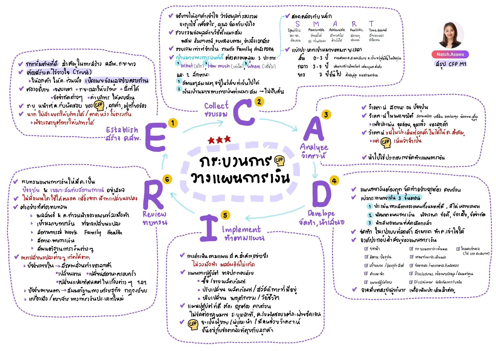
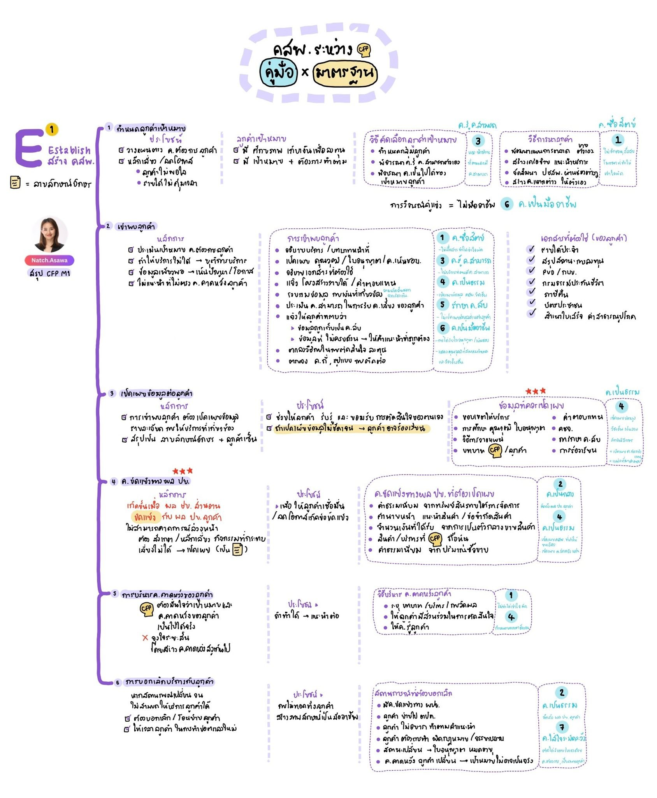
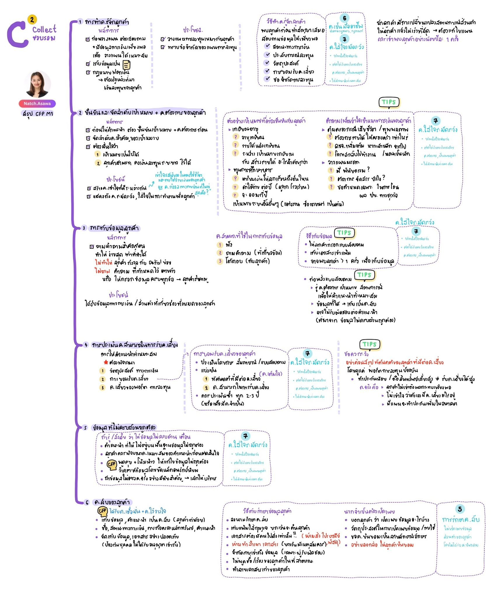
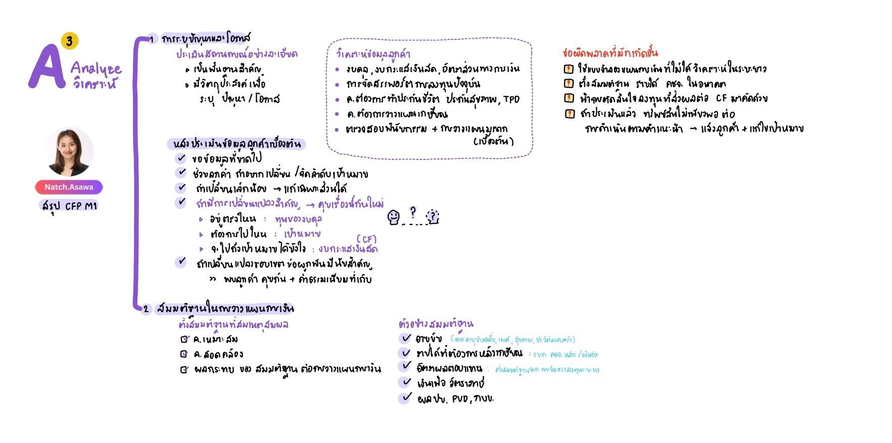
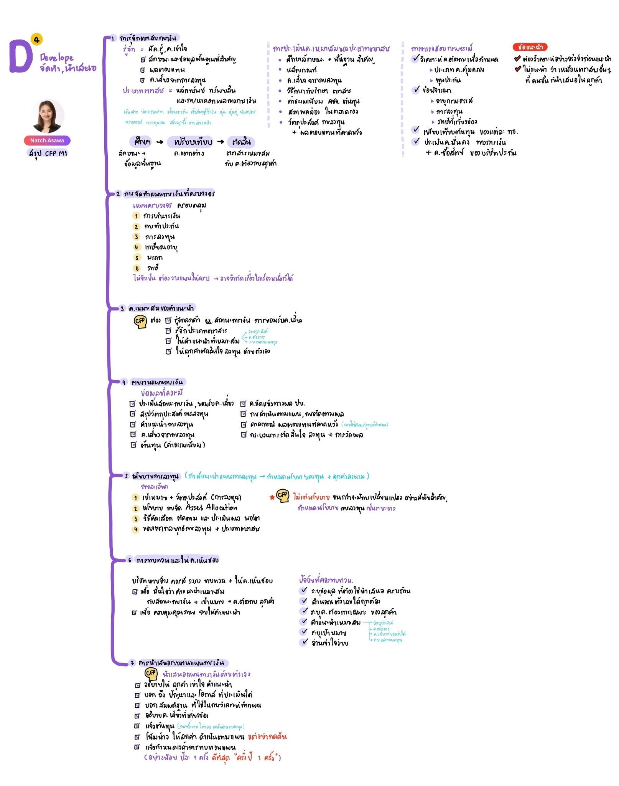
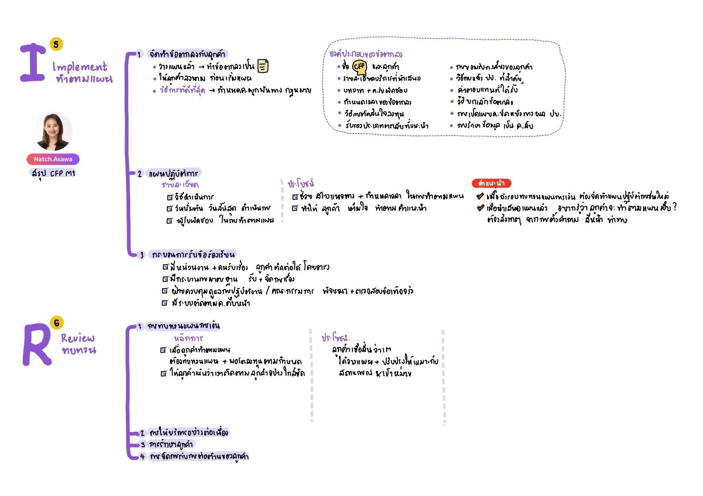
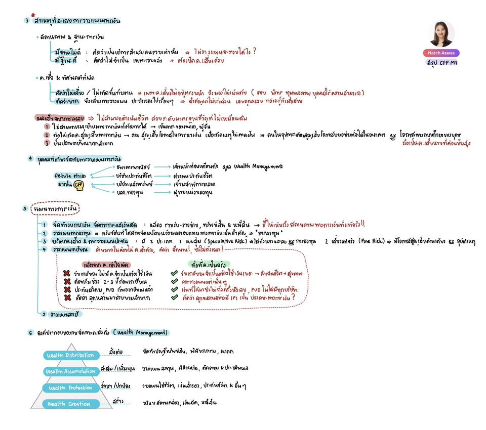
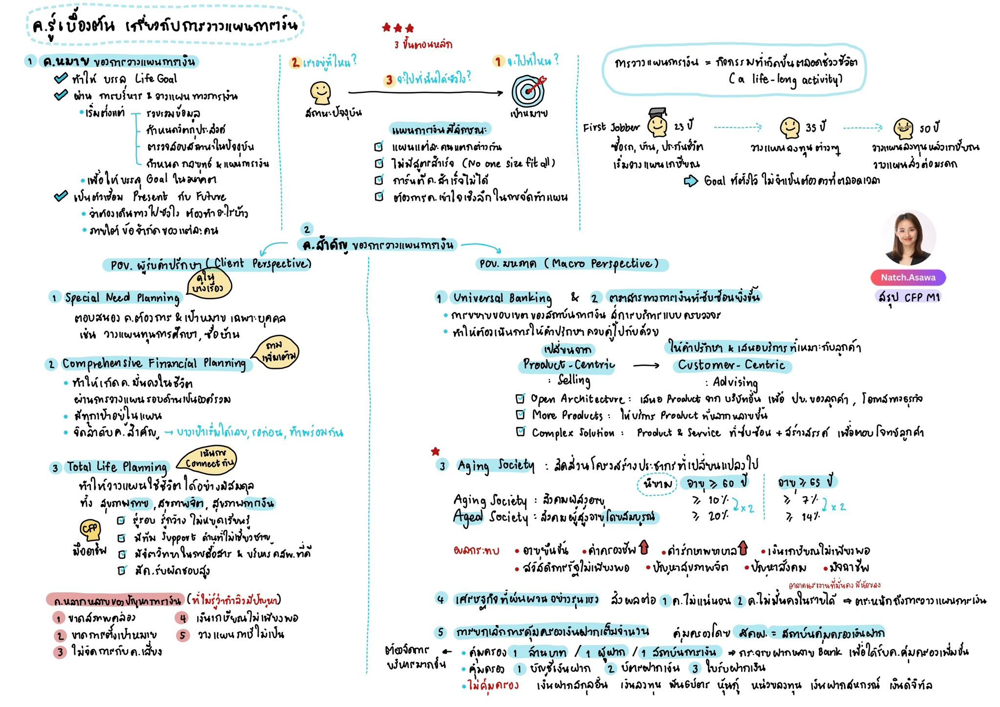
จรรยาบรรณและคู่มือปฏิบัติงาน
⚖️ T2-01: จรรยาบรรณ 7 ข้อ (ครบทุกรายละเอียด)
เทคนิคจำ: "ซื่อ กลาง รู้ ธรรม ลับ อาชีพ ใส่ใจ"
| # | ข้อ | ความหมายหลัก | รายละเอียด |
|---|---|---|---|
| 1 | Integrity ความซื่อสัตย์ | ไม่หลอกลวง ไม่ฉ้อโกง | ✅ พูด/เขียนซื่อสัตย์ complete disclosure ✅ ไม่ให้ข้อมูลที่ทำให้เข้าใจผิด ✅ เปิดเผย Conflict of Interest ทุกครั้ง ✅ ไม่รับสิ่งตอบแทนที่ขัดผลประโยชน์ลูกค้า |
| 2 | Objectivity ความเที่ยงธรรม | ปราศจากอคติ ให้คำแนะนำโดยอิสระ | ✅ ให้คำแนะนำปราศจากอคติ ความลำเอียง ✅ ไม่ให้ความสัมพันธ์ส่วนตัวมีผล ✅ คำแนะนำต้องตรงกับประโยชน์ลูกค้า ★ ต้อง Objective กับลูกค้า/นายจ้าง |
| 3 | Competence ความรู้ความสามารถ | มีความรู้ทักษะเพียงพอ | ✅ มีความรู้ ทักษะ ประสบการณ์เพียงพอ ✅ พัฒนาต่อเนื่อง CPD ✅ รู้ขอบเขตตัวเอง ถ้าเกิน → ส่งต่อผู้เชี่ยวชาญ ★ ต้องรู้จริง ไม่ใช่แค่มีใบอนุญาต |
| 4 | Fairness ความเป็นธรรม | ปฏิบัติต่อทุกคนอย่างเท่าเทียม | ✅ ปฏิบัติต่อลูกค้า คู่ค้า ทุกฝ่ายอย่างเป็นธรรม ✅ เปิดเผย Conflict of Interest ทั้งหมด ✅ ทุกลูกค้าได้มาตรฐานเดียวกัน ★ ลูกค้า > ตนเอง > บุคคลที่สาม |
| 5 | Confidentiality รักษาความลับ | รักษาข้อมูลลูกค้าทั้งขณะและหลังสิ้นสุดสัมพันธ์ | ✅ ไม่เปิดเผยข้อมูลลูกค้าโดยไม่ได้รับอนุญาต ✅ ใช้ข้อมูลเฉพาะเพื่อประโยชน์ลูกค้า ✅ ดูแลทั้งในและหลังสิ้นสุดความสัมพันธ์ ★ ยกเว้น: กฎหมายบังคับ / ลูกค้าอนุญาต |
| 6 | Professionalism ความเป็นมืออาชีพ | รักษาภาพลักษณ์วิชาชีพ | ✅ ประพฤติปฏิบัติตนให้เหมาะสม ✅ ไม่กระทำใดๆ เสื่อมเสียชื่อวิชาชีพ CFP ✅ ปฏิบัติตามกฎระเบียบ กฎหมาย จรรยาบรรณ ⚠️ ห้ามเรียกตัวเอง "CFP" หากไม่มีใบอนุญาต |
| 7 | Diligence ขยันหมั่นเพียร | ดูแลลูกค้าด้วยมาตรฐานสูงสุด | ✅ ระมัดระวัง ขยัน มีความรับผิดชอบ ✅ ทำงานรอบคอบ ครบถ้วน ทันกำหนด ✅ ติดตาม ทบทวน อัปเดตแผนสม่ำเสมอ ★ มาตรฐาน "Prudent Adviser" |
📜 มาตรฐานการปฏิบัติ (Code of Ethics รหัส 100–600)
| รหัส | หัวข้อ | สาระสำคัญ |
|---|---|---|
| 100 | Defining the Relationship | กำหนดความสัมพันธ์ ขอบเขต ค่าธรรมเนียม หน้าที่ (= E) |
| 200 | Gathering Client Data | รวบรวมข้อมูลครบถ้วน ปริมาณ+คุณภาพ (= C) |
| 300 | Analyzing and Evaluating | วิเคราะห์รอบด้าน ประเมินฐานะการเงิน (= A) |
| 400 | Developing the Plan | สร้างแผนที่เหมาะสมกับลูกค้า (= D) |
| 500 | Implementing the Plan | ดำเนินการ ประสานงาน ติดตาม (= I) |
| 600 | Monitoring the Plan | ทบทวนและปรับแผน (= R) |
⭐ Fiduciary Duty: CFP ต้องทำหน้าที่เพื่อ "ประโยชน์สูงสุดของลูกค้า" ก่อนเสมอ
🔗 T2-03: ความสัมพันธ์จรรยาบรรณ ↔ หลักปฏิบัติ
| มาตรฐาน | หัวข้อย่อย (Sub-standard) | สาระสำคัญ |
|---|---|---|
| 100-1 | ชี้แจงบริการและขอบเขต | ต้องชี้แจงประเภทบริการ กำหนดว่าเป็นการวางแผนการเงินหรือไม่ ระบุขอบเขตความรับผิดชอบทั้งสองฝ่าย |
| 200-1 | รวบรวมข้อมูลที่จำเป็น | รวบรวมข้อมูลเพียงพอตามขอบเขต: ข้อมูลส่วนบุคคล · งบดุล · งบกระแสเงินสด · งบประมาณ |
| 300-1 | วิเคราะห์และประเมินสถานะ | ผลวิเคราะห์ 4 ด้าน: ข้อมูลส่วนบุคคล · โครงสร้างการเงิน · อัตราส่วนการเงิน · เป้าหมายทางการเงิน |
| 400-1 | จัดทำและนำเสนอแผน | สังเคราะห์ผลวิเคราะห์ → สรุป+ข้อเสนอแนะ → จัดทำ Action Plan |
| 500-1 | ดำเนินการตามแผน | เริ่มดำเนินการ · ออมและลงทุนตามสมมติฐาน · ควบคุมค่าใช้จ่ายตามงบประมาณ |
| 600-1 | ทบทวนและตรวจสอบ | ทบทวนสม่ำเสมอ · ปรับเมื่อสถานการณ์เปลี่ยน · ถ้าไม่ต้องปรับ = แผนยังใช้ได้ดี |
⭐ T2-04: จุดสำคัญที่มักออกสอบ
- จำนวน: จรรยาบรรณ 7 ข้อ · มาตรฐานการปฏิบัติ 6 มาตรฐาน (100–600)
- ลำดับ: 100→200→300→400→500→600 สอดคล้องกับ ECADIR ทุกขั้น
- ความแตกต่างสำคัญ: จรรยาบรรณ = "ควรเป็นอะไร" (ค่านิยม) / หลักปฏิบัติ = "ควรทำอะไร" (การกระทำ)
- ข้อที่มักสับสน: Objectivity ≠ Fairness
→ Objectivity = ปราศจากอคติในการวิเคราะห์และให้คำแนะนำ
→ Fairness = ปฏิบัติต่อทุกคนอย่างเท่าเทียมกัน - Confidentiality: ห้ามเปิดเผยข้อมูลลูกค้าแก่บุคคลที่สาม ยกเว้น กฎหมายบังคับ หรือลูกค้าอนุญาต
- Fiduciary Duty: ลำดับความสำคัญ = ลูกค้า > ตนเอง > บุคคลที่สาม
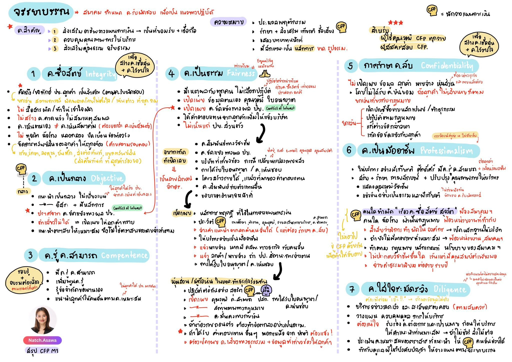
การรวบรวมข้อมูลทางการเงินส่วนบุคคล
💰 T3-01: งบกระแสเงินสด (Cash Flow Statement)
| Cash Inflow (รายรับ) | Cash Outflow (รายจ่าย) | ||
|---|---|---|---|
| Fixed | Variable | Fixed | Variable |
| เงินเดือน ค่าจ้างประจำ | โบนัส ค่าคอมมิชชัน | ผ่อนบ้าน/รถ | ค่าอาหาร ของใช้ |
| รายได้จากธุรกิจประจำ | เงินปันผล ดอกเบี้ย | ประกันชีวิตเบี้ยคงที่ | บันเทิง ท่องเที่ยว |
| ค่าเช่าที่แน่นอน | กำไรจากการขายทรัพย์สิน | ค่าเช่าบ้าน | ค่าซ่อมแซม |
Net Cash Flow และการออม
| สูตร | เกณฑ์ |
|---|---|
| Net Cash Flow = Total Inflow − Total Outflow | > 0 (เหลือเงินออม) |
| Savings Rate = NCF / Total Inflow × 100 | ≥ 10–20% |
📊 T3-02: งบดุล (Balance Sheet) & Investment
สมการพื้นฐาน
ประเภทสินทรัพย์ 4 หมวด ⭐
| หมวด | ตัวอย่าง | ลักษณะ |
|---|---|---|
| 1. สินทรัพย์สภาพคล่อง (Liquid) | เงินสด · ออมทรัพย์ · ฝากประจำ · NCD · กองทุนตลาดเงิน | แปลงเป็นเงินสดได้เร็ว ผลตอบแทนต่ำ |
| 2. สินทรัพย์เพื่อการลงทุน (Investment) | หุ้น · กองทุน · พันธบัตร/หุ้นกู้ · อสังหาฯ · PVD · มูลค่าเงินสดประกันชีวิต | มุ่งเพิ่มมูลค่า มีความเสี่ยง |
| 3. สินทรัพย์ใช้ส่วนตัว (Personal Possessions) | บ้านอยู่อาศัย · รถ · เครื่องประดับ · ของสะสม | ใช้ในชีวิตประจำวัน ราคาลดลง ไม่ผลิตรายได้ |
| 4. สินทรัพย์อื่นๆ (Other Assets) | สิทธิบัตร · ลิขสิทธิ์ · หุ้นในบริษัทปิด (Private Ownership) | สินทรัพย์ที่ไม่จัดในหมวดอื่น |
หนี้สิน (Liabilities)
| ประเภท | ตัวอย่าง |
|---|---|
| ระยะสั้น (Current) | ยอดค้างบัตรเครดิต · หนี้สินระยะสั้นอื่นๆ |
| ระยะยาว (Long-term) | ยอดค้างกู้ซื้อรถ · ยอดค้างกู้ซื้อบ้าน · หนี้สินระยะยาวอื่นๆ |
⭐ NCD (Negotiable Certificate of Deposit) = จัด สภาพคล่อง เพราะเปลี่ยนมือได้ · มูลค่าเงินสดประกันชีวิต = จัด ลงทุน ไม่ใช่ค่าใช้จ่าย
Investment Constraints (CRLUT)
| ตัวย่อ | ความหมาย | ตัวอย่าง |
|---|---|---|
| C — Capital | ต้องการเงินต้นคืน | ต้องมีเงินต้น 1 ล้านเมื่ออายุ 60 |
| R — Risk | ระดับความเสี่ยงที่รับได้ | รับขาดทุนได้ไม่เกิน 15% ต่อปี |
| L — Liquidity | ต้องการสภาพคล่อง | ต้องมีเงินฉุกเฉิน 6 เดือน |
| U — Unique | ข้อจำกัดพิเศษ | ไม่ลงทุนหุ้นแอลกอฮอล์ศาสนา |
| T — Time | ระยะเวลาลงทุน | ลงทุน 20 ปีก่อนเกษียณ |
⭐ IPS (Investment Policy Statement): เอกสารระบุวัตถุประสงค์+ข้อจำกัดการลงทุนทั้งหมด
🔄 T3-03: Life Cycle & วิเคราะห์ข้อมูล
วงจรชีวิตทางการเงิน 3 ช่วง
| ช่วง | อายุ | ลักษณะ | ความเสี่ยง |
|---|---|---|---|
| สะสม (Accumulation) | 20–45 ปี | รายได้เพิ่ม หนี้สูง ออมน้อย ลงทุนสูง | รับความเสี่ยงสูงได้ |
| สะสมรวดเร็ว (Conservation) | 45–60 ปี | รายได้สูงสุด หนี้ลด สะสมทรัพย์ | ความเสี่ยงปานกลาง |
| แจกจ่าย (Distribution) | 60+ ปี | ใช้เงินออม ต้องการรายได้สม่ำเสมอ | ความเสี่ยงต่ำ |
อัตราส่วนสำคัญ
| อัตราส่วน | สูตร | เกณฑ์ |
|---|---|---|
| Emergency Fund Ratio | Liquid Assets / Monthly Non-Discretionary Expense | 3–6 เดือน |
| Current Ratio | Liquid Assets / Current Liabilities | > 1 |
| Savings Ratio | Annual Savings / Gross Annual Income | ≥ 10–25% |
| Debt Service Ratio | Monthly Debt Payment / Monthly Net Income | ≤ 35–40% |
| Solvency Ratio | Net Worth / Total Assets | > 0 (ควร > 50%) |
📏 T3-04: ตารางอัตราส่วนแยกตามช่วงอายุ
| อัตราส่วน | วิธีคำนวณ | ช่วงอายุ | เกณฑ์ |
|---|---|---|---|
| Emergency Fund Ratio | Liquid Assets / Monthly Non-Discretionary Expense | ทุกช่วง | 3–6 เดือน |
| Net Worth | Total Assets − Total Liabilities | ทุกช่วง | > 0 เพิ่มขึ้นทุกปี |
| Savings Ratio | Annual Savings / Gross Annual Income | 20–60 | ≥ 10–25% |
| Debt Service Ratio | Monthly Debt / Monthly Net Income | ทุกช่วง | ≤ 35–40% |
| Investment Assets to NW | Investment Assets / Net Worth | วัยกลาง+ | ≥ 50% |
แนวทางตามช่วงอายุ
| ช่วงอายุ | Savings Rate | Debt Ratio | Emergency Fund |
|---|---|---|---|
| 20–35 ปี | ≥ 15% | ≤ 40% | 3–6 เดือน |
| 35–50 ปี | ≥ 20% | ≤ 30% | 6 เดือน |
| 50–65 ปี | ≥ 25% | ≤ 20% | 6–12 เดือน |
⭐ อัตราส่วนเป็นแนวทาง ต้องพิจารณาบริบทลูกค้าด้วยเสมอ
🔎 T3-05: ประเภทข้อมูล + ความสัมพันธ์งบการเงิน + จุดออกสอบ
ประเภทข้อมูลที่รวบรวม
| ประเภท | ความหมาย | ตัวอย่าง |
|---|---|---|
| Quantitative (เชิงปริมาณ) | วัดได้เป็นตัวเลข | รายได้ รายจ่าย สินทรัพย์ หนี้สิน ภาษี อัตราดอกเบี้ย มูลค่าประกัน |
| Qualitative (เชิงคุณภาพ) | ไม่สามารถวัดเป็นตัวเลขได้ | เป้าหมายชีวิต ค่านิยม Risk Tolerance สถานภาพครอบครัว สุขภาพ ทัศนคติ |
ความสัมพันธ์ระหว่างงบดุล ↔ งบกระแสเงินสด
⭐ จุดสำคัญที่มักออกสอบ
- NCD = สินทรัพย์สภาพคล่อง (ไม่ใช่ฝากประจำทั่วไป เพราะเปลี่ยนมือได้)
- มูลค่าเงินสดกรมธรรม์ประกันชีวิต = สินทรัพย์เพื่อการลงทุน (ไม่ใช่ค่าใช้จ่าย)
- เบี้ยประกัน = กระแสเงินสดจ่ายคงที่ (Fixed Cash Outflow)
- กองทุนสำรองเลี้ยงชีพ (PVD) = อยู่ทั้ง สินทรัพย์ลงทุน (งบดุล) และ กระแสเงินสดจ่ายคงที่ (งบกระแสเงินสด)
- สินทรัพย์ 4 ประเภท: สภาพคล่อง / ลงทุน / ใช้ส่วนตัว / อื่นๆ (Patent, Private Co.)
- งบดุล = ณ วันที่ใดวันหนึ่ง (Stock) ≠ งบกระแสเงินสด = ช่วงเวลา (Flow)
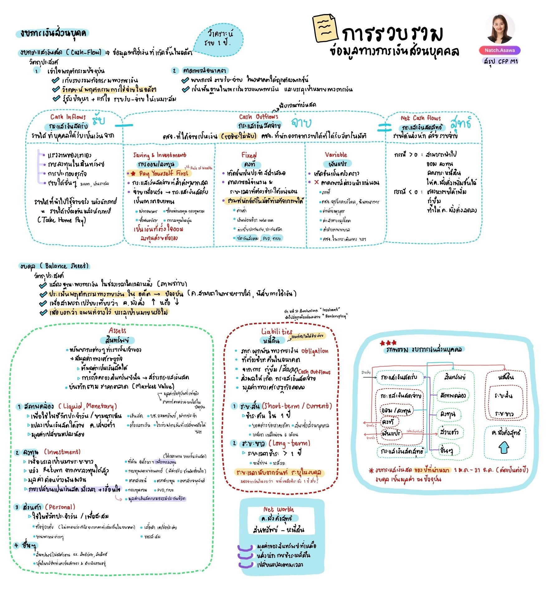
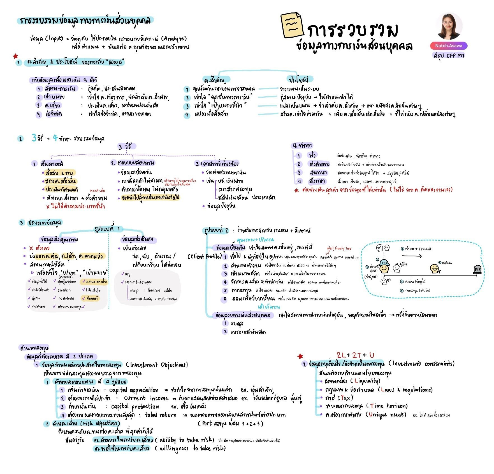
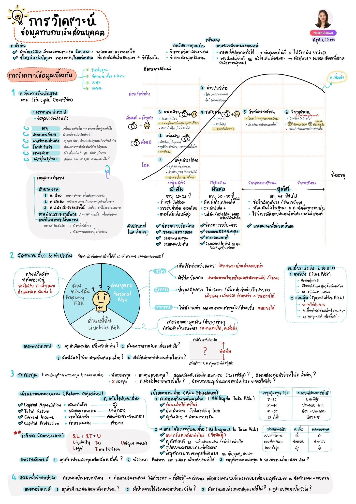
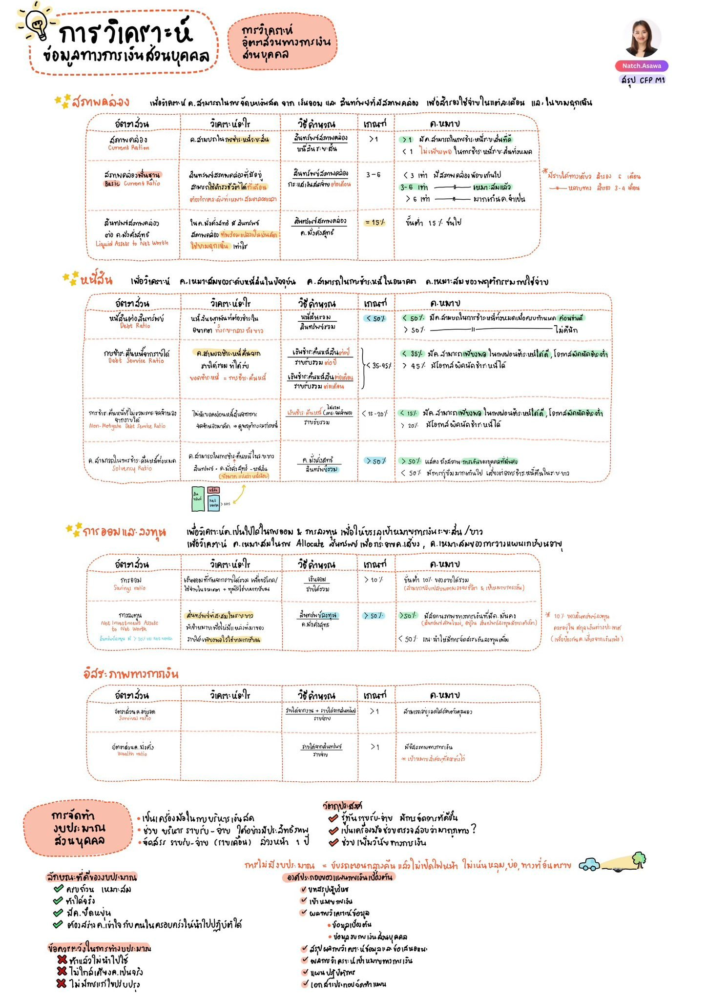
การวิเคราะห์ข้อมูลและการบริหารสภาพคล่อง
📊 T4-00: Common-Size Analysis + อัตราส่วนทางการเงิน
Common-Size Analysis (แปลงเป็น %)
| งบ | ฐาน (100%) | วิธีใช้ |
|---|---|---|
| งบดุล | สินทรัพย์รวม | แต่ละรายการคิดเป็น % ของสินทรัพย์รวม → เปรียบเทียบโครงสร้าง |
| งบกระแสเงินสด | รายรับรวม | แต่ละรายการคิดเป็น % ของรายรับรวม → เปรียบเทียบสัดส่วน |
อัตราส่วนทางการเงินส่วนบุคคล 8 ตัว
| # | อัตราส่วน | สูตร | เกณฑ์ |
|---|---|---|---|
| 1 | กองทุนฉุกเฉิน (Emergency Fund) | สินทรัพย์สภาพคล่อง / ค่าใช้จ่ายรายเดือน | 3–6 เดือน |
| 2 | สภาพคล่องพื้นฐาน (Basic Liquidity) | สินทรัพย์สภาพคล่อง / ค่าใช้จ่ายรายเดือน | > 1 |
| 3 | สภาพคล่องต่อ Net Worth | สินทรัพย์สภาพคล่อง / Net Worth | ≥ 15% |
| 4 | หนี้ต่อสินทรัพย์ (Debt-to-Asset) | หนี้สินรวม / สินทรัพย์รวม | < 50% |
| 5 | Debt Service Ratio | ค่างวดหนี้รวม / รายได้สุทธิรายเดือน | ≤ 35–40% |
| 6 | Non-mortgage Debt Service | ค่างวดหนี้ไม่ใช่บ้าน / รายได้สุทธิรายเดือน | < 15% |
| 7 | Savings Ratio | เงินออมรายเดือน / รายได้รวมรายเดือน (Gross) | > 10% |
| 8 | Investment Ratio | สินทรัพย์เพื่อการลงทุน / Net Worth | > 50% (ใกล้เกษียณ) |
งบประมาณส่วนบุคคล (Personal Budget)
⚖️ T4-00B: ความเสี่ยง 3 ประเภท + Asset Allocation เบื้องต้น
ความเสี่ยง 3 ประเภทที่ต้องวิเคราะห์
| ประเภท | ตัวอย่าง |
|---|---|
| ความเสี่ยงส่วนบุคคล (Personal Risk) | เสียชีวิต · ทุพพลภาพ · ตกงาน · โรคร้ายแรง |
| ความเสี่ยงทรัพย์สิน (Property Risk) | ทรัพย์สินถูกทำลาย · สูญหาย · ถูกขโมย |
| ความเสี่ยงหนี้สิน (Liability Risk) | ถูกฟ้องร้อง · ต้องชดใช้ค่าเสียหายแก่ผู้อื่น |
Asset Allocation เบื้องต้นตามระดับความเสี่ยง
| ระดับ | หุ้น | ตราสารหนี้ |
|---|---|---|
| Conservative (ต่ำ) | 0–30% | 70–100% |
| Moderate (ปานกลาง) | 40–60% | 40–60% |
| Aggressive (สูง) | 70–100% | 0–30% |
⭐ เครื่องมือ Cash Management
| เครื่องมือ | ลักษณะ | ข้อดี |
|---|---|---|
| บัญชีออมทรัพย์ | ถอนได้ตลอด | สภาพคล่องสูงสุด |
| บัญชีกระแสรายวัน (OD) | เบิกได้ทันที | ใช้สำหรับธุรกรรม |
| NCD | เปลี่ยนมือได้ | ดอกเบี้ยสูงกว่าออมทรัพย์ |
| ตั๋วเงินคลัง (T-Bill) | รัฐบาลออก | ความเสี่ยงต่ำมาก |
| กองทุนตลาดเงิน (MMF) | ลงทุนตราสารระยะสั้น | สภาพคล่องสูง ดอกเบี้ยดี |
💳 T4-01: สินเชื่อระยะสั้น (Short-term Credit)
| ประเภท | รายละเอียด | หมายเหตุ |
|---|---|---|
| Credit Card (Revolving) | วงเงินหมุนเวียน · ดอกเบี้ยสูงสุด 20% ต่อปี · จ่ายขั้นต่ำ 5–10% · Grace Period 45–55 วัน | ชำระเต็มก่อน due ไม่เสียดอกเบี้ย |
| Overdraft (OD) | เบิกเกินบัญชี ดอกเบี้ยคิดรายวัน · MLR + ส่วนเพิ่ม | คิดดอกเบี้ยเฉพาะยอดที่ใช้ |
| Personal Loan (Unsecured) | ไม่มีหลักประกัน ดอกเบี้ย 25–28%/ปี | ใช้เงินเดือนค้ำ |
🏠 T4-01: สินเชื่อระยะยาว (Long-term Credit)
| ประเภท | Fixed Rate | Variable Rate | Mixed Rate |
|---|---|---|---|
| ลักษณะ | อัตราคงที่ตลอด | ปรับตาม MRR/MLR | ช่วงแรกคงที่ แล้วลอยตัว |
| ความแน่นอน | สูง วางแผนง่าย | ต่ำ ขึ้นลงตามตลาด | ปานกลาง |
| เหมาะกับ | ล็อกดอกเบี้ยต่ำนาน | คาดว่าดอกเบี้ยจะลง | มั่นคงช่วงแรก |
Amortization ประเภท
| ประเภท | วิธีตัดชำระ |
|---|---|
| Simple (Straight-line) | ตัดเงินต้นเท่ากันทุกงวด ดอกเบี้ยลดเรื่อยๆ |
| Constant Payment (Annuity) | ค่างวดเท่ากัน ดอกเบี้ยลด เงินต้นเพิ่ม (กู้บ้านทั่วไป) |
| Balloon | ค่างวดต่ำ จ่ายก้อนใหญ่ตอนท้าย |
🧮 T4-02: ฝึกคำนวณ Cost of Credit (ทุกโจทย์)
โจทย์ 1 — Simple Interest: กู้ 500,000 @ 10%/ปี ผ่อน 1 งวด ดาวน์ 120,000
B: เงินที่นำไปลงทุน (กู้สุทธิ หักดาวน์+ดอก) = 120,000 − 50,000 = 70,000 บาท
C: แนะนำเหลือ = 500,000 − 70,000 = 430,000 บาท
โจทย์ 2 — Simple (ส่วนบุคคล): กู้ 100,000 @ 20%/ปี ผ่อนเดือนละ 3,000
B: ตัดเงินต้น = 3,000 − 1,666.67 = 1,333.33 บาท/เดือน
C: เหลือเงินต้น = 100,000 − 1,333.33 = 98,666.67 บาท
โจทย์ 3 — Simple: กู้ 50,000 @ 20%/ปี ค่างวด 1,500/เดือน
B: ตัดเงินต้น = 1,500 − 833.33 = 666.67 บาท
C: เหลือเงินต้น = 50,000 − 666.67 = 49,333.33 บาท
โจทย์ 4 — Discount Method: กู้ 100,000 @ 15%/ปี ⭐
B: เงินที่ได้รับจริง = 100,000 − 15,000 = 85,000 บาท
C: True rate = 15,000 / 85,000 = 17.65% ต่อปี ★ (True > Stated)
โจทย์ 5 — Discount (บัตรเครดิต): 30,000 @ 3%/เดือน + 15%/ปี คืนใน 29 วัน
เงินที่ได้รับจริง = 30,000 บาท
B: True rate = (368.22 + 900) / 30,000 × 365/29 = 53.94% ต่อปี
โจทย์ 6 — Add-on (Flat Rate): ซื้อรถ 800,000 ดาวน์ 20% ผ่อน 5 ปี @ 2.5% ⭐
B: ดอกเบี้ยทั้งหมด = 640,000 × 2.5% × 5 ปี = 80,000 บาท
C: ค่างวด = (640,000 + 80,000) / 60 เดือน = 12,000 บาท/เดือน ✅
⭐ สรุปเปรียบเทียบ
| วิธี | True Rate vs Stated Rate |
|---|---|
| Simple Interest | True = Stated (เท่ากัน) |
| Discount Method | True > Stated (รับเงินน้อยกว่า) |
| Add-on / Flat Rate | True ≈ 2× Stated (กฎประมาณ) |
⭐ T4-03: จุดสำคัญที่มักออกสอบ
- กองทุนฉุกเฉิน = 3–6 เดือนของ ค่าใช้จ่าย (ไม่ใช่รายได้) · อาชีพมั่นคง = 3 เดือน · อาชีพอิสระ = 6 เดือน
- Debt Service ≤ 35–40% = รวมทุกหนี้ (บ้าน+รถ+อื่นๆ) / รายได้สุทธิ (Net Income) · Non-mortgage < 15%
- Add-on Rate 5% ≈ True Rate ~10% (คูณ 2 โดยประมาณ) · หา True Rate แน่ๆ ต้องใช้ Calculator (IRR)
- Discount Method: รับเงินน้อยกว่า True Rate สูงกว่า Stated เสมอ
- บัตรเครดิต: จ่ายเต็มก่อน due date ไม่เสียดอกเบี้ยเลย (Grace Period) · ดอกเบี้ยสูงสุด 20%/ปี ตาม ธปท.
- NCD ≠ เงินฝากประจำ: NCD เปลี่ยนมือได้ → Liquid Asset · เงินฝากประจำ เปลี่ยนมือไม่ได้ แต่ก็ยังเป็น Liquid
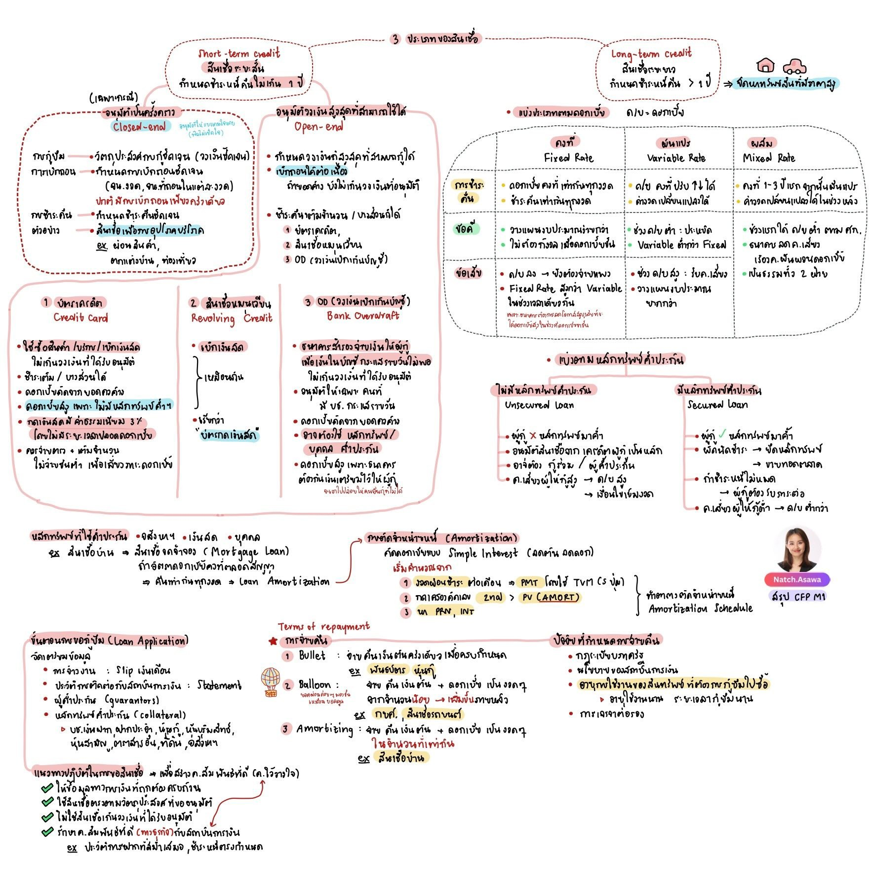
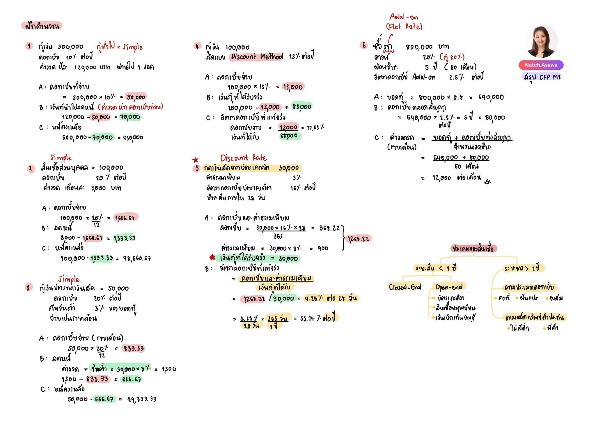
ภาษีเงินได้บุคคลธรรมดา
🧾 T5-01/02: ภาษีเงินได้บุคคลธรรมดา — ภาพรวม
ผู้มีหน้าที่เสียภาษี
| ประเภท | หมายเหตุ |
|---|---|
| บุคคลธรรมดา | มีเงินได้ตามมาตรา 40 ทุกประเภท |
| ห้างหุ้นส่วนสามัญ / คณะบุคคล | ที่ไม่ใช่นิติบุคคล |
| กองมรดก | ที่ยังไม่ได้แบ่ง |
โครงสร้างภาษี (ขั้นตอน)
| # | รายการ |
|---|---|
| 1 | เงินได้พึงประเมิน (ทุก ม.40) |
| 2 | หัก: ค่าใช้จ่าย (ตามมาตรา) |
| 3 | หัก: ค่าลดหย่อน |
| 4 | = เงินได้สุทธิ |
| 5 | × อัตราภาษีขั้นบันได |
| 6 | เทียบกับ 0.5% Method (ถ้าเงินได้ > 1 ล้าน) |
กำหนดการยื่นแบบ
| แบบ | กำหนด | ใครยื่น |
|---|---|---|
| ภ.ง.ด.90 | 31 มีนาคม (ออนไลน์ 8 เม.ย.) | มีเงินได้นอกจาก 40(1) |
| ภ.ง.ด.91 | 31 มีนาคม (ออนไลน์ 8 เม.ย.) | เฉพาะ 40(1) เงินเดือน |
| ภ.ง.ด.94 | 30 กันยายน | ม.40(5)–(8) ครึ่งปี |
🌏 T5-03: หลักการจัดเก็บภาษีระหว่างประเทศ (3 หลัก)
| หลัก | เงื่อนไข | ต้องเสียภาษีไทย? |
|---|---|---|
| 1. หลักแหล่งเงินได้ (Source Rule) | มีเงินได้จากไทย ไม่ว่าจะอยู่ที่ไหน | ✅ ต้องเสียภาษีไทย (เงินได้ในไทย) |
| 2. หลักถิ่นที่อยู่ (Residence Rule) | อยู่ในไทย ≥ 180 วันในปีภาษีนั้น | ✅ เสียภาษีทั้งเงินได้ในและนอกไทย |
| 3. หลักสัญชาติ (Nationality Rule) | มีสัญชาติไทย | ⛔ ไทยไม่ใช้หลักนี้ (สหรัฐใช้) |
กฎ 180 วัน — ตัวอย่างปี 67
| กรณี | ผล |
|---|---|
| 16 ก.ค. – 31 ธ.ค. 67 (× 180 วัน): บุกเบิกเข้ามา ไม่เสียภาษี | ไม่เสีย (น้อยกว่า 180 วัน) |
| 1 ม.ค. – 31 ธ.ค. 68 (> 180 วัน): ถิ่นประจำ + อยู่เกิน 180 วัน | เสียภาษีไทย |
| 1 ม.ค. – 30 พ.ย. 69 (≥ 180 วัน): บ้านอยู่จากปาก (เกิดนอก) + อยู่ไทย ≥ 180 วัน | เสียภาษีไทย !! |
⭐ กฎใหม่ 1 ม.ค. 2567
เงินได้หลัง 1 ม.ค. 67: ถ้าอยู่ไทย ≥ 180 วัน → เสียภาษีไทย ไม่ว่านำเงินเข้าปีไหน
กฎหมายที่กำหนดอำนาจการเก็บภาษี
| กฎหมาย | ขอบเขต |
|---|---|
| รัฐธรรมนูญ | กำหนดหลักการ |
| พ.ร.บ. ประกอบรัฐธรรมนูญ (พ.ร.บ.) | กฎหมายลูก |
| พระราชกฤษฎีกา | ฝ่ายบริหาร ลด/ยกเว้นภาษีหมวดบน |
| กฎกระทรวง | สรรพากรกำหนด |
| ข้อบังคับพิเศษอื่นๆ | หน่วยงาน ศาลสิ้น ระเบียบ ที่เก็บของ |
📂 T5-04: เงินได้พึงประเมิน ม.40 และค่าใช้จ่าย
| มาตรา | ประเภทเงินได้ | ค่าใช้จ่ายหักได้ |
|---|---|---|
| 40(1) | เงินเดือน ค่าจ้าง โบนัส | 50% ไม่เกิน 100,000 บาท |
| 40(2) | ค่าจ้างทำของ ค่านายหน้า | 50% ไม่เกิน 100,000 บาท |
| 40(3) | ค่าแห่งกู๊ดวิลล์ ค่าลิขสิทธิ์ สิทธิต่างๆ | 50% ไม่เกิน 100,000 บาท |
| 40(4)(ก) | ดอกเบี้ย | ไม่มี (หักไม่ได้) |
| 40(4)(ข) | เงินปันผล ส่วนแบ่งกำไร | ไม่มี |
| 40(5) | ค่าเช่าทรัพย์สิน | ตามจริง หรือเหมา 10–30% |
| 40(6) | วิชาชีพอิสระ | ทางแรง 60% / ทางนั่ง 30% |
| 40(7) | รับเหมา (แรงงาน+อุปกรณ์) | ตามจริง หรือเหมา 70% |
| 40(8) | เงินได้อื่นๆ (ธุรกิจทั่วไป) | ตามจริง หรือเหมา |
⭐ ม.40(1)+(2) รวมกัน หักได้สูงสุด 100,000 บาท (ไม่ใช่คนละ 100K)
ม.40(5) ค่าเช่า — ค่าใช้จ่ายตามประเภทสินทรัพย์
| ประเภทสินทรัพย์ | ค่าใช้จ่ายหักได้ |
|---|---|
| บ้าน โรงเรือน สิ่งปลูกสร้าง แพ | 30% |
| เรือขนาด ≥ 6 ตันกรอส | 30% |
| เรือขนาด < 6 ตันกรอส | 20% |
| ยานพาหนะ | 30% |
| ทรัพย์สินอื่นๆ | 10% |
ม.40(6) วิชาชีพอิสระ — ทางแรง vs ทางนั่ง
| ประเภท | วิชาชีพ | ค่าใช้จ่ายเหมา |
|---|---|---|
| ทางแรง | แพทย์ ทันตแพทย์ สัตวแพทย์ เภสัชกร ทนาย วิศวกร | 60% |
| ทางนั่ง | นักบัญชี สถาปนิก วิจิตรศิลป์ ช่างภาพ | 30% |
🎁 T5-05: เงินได้ยกเว้นภาษี (สำคัญมาก)
| รายการ | วงเงิน / เงื่อนไข |
|---|---|
| ดอกเบี้ยเงินฝากออมทรัพย์ | ≤ 20,000 บาท/ปี ยกเว้น |
| PVD — เงินสะสม+สมทบ | ยกเว้นขณะสะสม |
| PVD — รับเงิน | ยกเว้น ถ้าอายุ ≥ 55 + เป็นสมาชิก ≥ 5 ปี |
| RMF — กำไร | ยกเว้น ถ้าถือ ≥ 5 ปีปฏิทิน + อายุ ≥ 55 |
| ค่าชดเชยเลิกจ้าง | ยกเว้นตามกฎหมายแรงงาน (บางส่วน) |
| เงินรับมรดก | ยกเว้นภาษีเงินได้บุคคลธรรมดา |
| รางวัลสลากกินแบ่งรัฐบาล | หัก ณ ที่จ่าย 1% (Final Tax) |
💰 T5-06: ค่าลดหย่อนทั่วไป (ครบทุกรายการ)
ส่วนตัวและครอบครัว
| รายการ | จำนวน (บาท) | เงื่อนไข |
|---|---|---|
| ผู้มีเงินได้ (ส่วนตัว) | 60,000 | ทุกคน |
| คู่สมรส (ไม่มีเงินได้) | 60,000 | จดทะเบียน ไม่มีรายได้ |
| บุตร (คนที่ 1–2) | 30,000/คน | อายุ < 20 หรือเรียนหนังสือ |
| บุตรคนที่ 2 (เกิดปี 61+) | 60,000 | นโยบายส่งเสริมการมีบุตร |
| บิดา/มารดา (ตัวเอง) | 30,000/คน | อายุ ≥ 60 รายได้ < 30,000/ปี |
| บิดา/มารดา (คู่สมรส) | 30,000/คน | เงื่อนไขเดียวกัน |
| ทุพพลภาพ/พิการ | 60,000 | เพิ่มเติมจากปกติ |
ประกันชีวิต & สุขภาพ
| รายการ | สูงสุด (บาท) | เงื่อนไข |
|---|---|---|
| ประกันชีวิตทั่วไป (ตัวเอง) | 100,000 | คุ้มครอง ≥ 10 ปี |
| ประกันสุขภาพ (ตัวเอง) | 25,000 | รวมกับชีวิตไม่เกิน 100,000 |
| ประกันชีวิต (คู่สมรส) | 10,000 | คู่สมรสไม่มีรายได้ |
| ประกันสุขภาพ (พ่อแม่) | 15,000 | รวมกับของตัวเอง |
| ประกันบำนาญ | 200,000 | คุ้มครอง ≥ 10 ปี · นับรวม Retirement limit 500K |
อื่นๆ
| รายการ | สูงสุด (บาท) |
|---|---|
| ดอกเบี้ยเงินกู้บ้าน | 100,000/ปี |
| ซื้อบ้านหลังแรก (สัญญา ≤ 5 ล้าน) | 10% × ราคาบ้าน แบ่ง 5 ปี |
| ประกันสังคม | ตามจริง (max ~9,000) |
📈 T5-07: ค่าลดหย่อนด้านออมและลงทุน
| รายการ | เงื่อนไข | วงเงินสูงสุด |
|---|---|---|
| PVD | ≤ 15% เงินได้ | 500,000 |
| กบข. | ≤ 30% เงินเดือน | 500,000 |
| กอช. (กองทุนออมแห่งชาติ) | ตามจริง | 13,200 |
| RMF | ≤ 30% เงินได้ | 500,000 |
| SSF | ≤ 30% เงินได้ | 200,000 |
| ประกันบำนาญ | ≤ 15% เงินได้ | 200,000 |
| Thai ESG | ≤ 30% เงินได้ | 300,000 |
⭐ PVD + กบข. + ประกันบำนาญ + RMF + กอช. รวมกัน ≤ 500,000 บาท
เงื่อนไข RMF / SSF / Thai ESG
| เงื่อนไข | RMF | SSF | Thai ESG |
|---|---|---|---|
| ซื้อต่อเนื่อง | ทุกปี (ห้ามเว้น) | ไม่บังคับ | ไม่บังคับ |
| อายุถือขั้นต่ำ | 5 ปีปฏิทิน + อายุ ≥ 55 | 10 ปีปฏิทิน | 5 ปีปฏิทิน (วันชนวัน) |
| Switch ได้ไหม | Switch ระหว่าง RMF ได้ | ไม่ Switch ไป RMF | — |
📌 Remark — RMF ปีเว้นปี: บางแหล่งข้อมูล (เช่น สรรพากร) ระบุว่า RMF ซื้อ "ทุกปีหรือปีเว้นปี" ได้ หากปีใดไม่มีเงินได้ แต่ตาม หลักสูตร CFP1 ถือว่าต้องซื้อทุกปีที่มีเงินได้ (ห้ามเว้น) — ควรศึกษาแนวข้อสอบของ ThaiPFA เพิ่มเติม
🔢 T5-09: การคำนวณภาษี — สูตรและตารางขั้นบันได
สูตรหลัก
เงินได้สุทธิ = (เงินได้พึงประเมิน − เงินได้ยกเว้น) − ค่าใช้จ่าย − ค่าลดหย่อน
ตารางขั้นบันได
| เงินได้สุทธิ (บาท/ปี) | อัตรา | ภาษีสะสมตั้งแต่ต้น |
|---|---|---|
| 0 – 150,000 | 0% (ยกเว้น) | 0 |
| 150,001 – 300,000 | 5% | 7,500 |
| 300,001 – 500,000 | 10% | 27,500 |
| 500,001 – 750,000 | 15% | 65,000 |
| 750,001 – 1,000,000 | 20% | 115,000 |
| 1,000,001 – 2,000,000 | 25% | 365,000 |
| 2,000,001 – 5,000,000 | 30% | 1,265,000 |
| > 5,000,000 | 35% | — |
วิธี 0.5% (ใช้เมื่อเงินได้พึงประเมิน > 1 ล้าน นอกจาก ม.40(1))
→ เลือกวิธีที่คำนวณได้สูงกว่าระหว่าง ขั้นบันได กับ 0.5%
ETR และเครดิตภาษีเงินปันผล
เครดิตภาษีเงินปันผล = ปันผล × อัตราบริษัท / (1 − อัตราบริษัท)
ตัวอย่าง: ปันผล 20 บาท บริษัทเสีย 20% → เครดิต = 20 × 20/80 = 5 บาท
เงินได้รวม = 20 + 5 = 25 · ถ้าอัตราบุคคล < 20% → ได้คืน
🏠 T5-10: ภาษีขายอสังหาริมทรัพย์ + กรณีสามีภรรยา
ภาษีหัก ณ ที่จ่ายจากการขายอสังหาริมทรัพย์
กรณีสามีภรรยา (ม.57 ฉ) — 5 วิธียื่น
| วิธี | รายละเอียด |
|---|---|
| 1 | รวมกัน — รวมเงินได้ทุกประเภทยื่นแบบเดียว |
| 2 | สามียื่นรวม ภรรยาแยกเฉพาะ ม.40(1) |
| 3 | ต่างคนต่างยื่น — แยกกันทั้งหมด |
| 4 | สามีแยก ม.40(1) ภรรยายื่นรวม |
| 5 | ต่างคนต่างยื่น ม.40(1) · รวมประเภทอื่น |
ภาษีครึ่งปี (ม.56 ทวิ)
- เฉพาะผู้มีเงินได้ ม.40(5)–(8) ต้องยื่น ภ.ง.ด.94 ภายในเดือน กันยายน
- คำนวณจากเงินได้ครึ่งปีแรก (ม.ค.–มิ.ย.) × 2 → คำนวณภาษี → หารครึ่ง
- ภาษีครึ่งปีที่ชำระแล้วนำไปหักออกจากภาษีทั้งปีในแบบ ภ.ง.ด.90
⭐ Quick Reference T5
| หัวข้อ | ข้อมูลสำคัญ |
|---|---|
| เงินได้พึงประเมิน | 8 ประเภท (ม.40(1)–(8)) |
| ค่าลดหย่อน | 22 รายการ |
| อัตราภาษีสูงสุด | 35% (เงินได้สุทธิ > 5 ล้าน) |
| เงินได้สุทธิไม่เสียภาษี | ≤ 150,000 บาท |
| วิธีคำนวณ | 2 วิธี → เลือกวิธีที่สูงกว่า |
| Limit รวม Retirement Fund | PVD + กบข. + ประกันบำนาญ + RMF + กอช. ≤ 500,000 บาท |
| Final Tax ดอกเบี้ย | 15% |
| Final Tax เงินปันผล | 10% (หรือเลือกนำมารวมคำนวณ) |
| ม.56 ทวิ ครึ่งปี | ยื่น ก.ย. เฉพาะ ม.40(5)–(8) |
| กรณีสามีภรรยา | 5 วิธียื่น (ม.57 ฉ) |
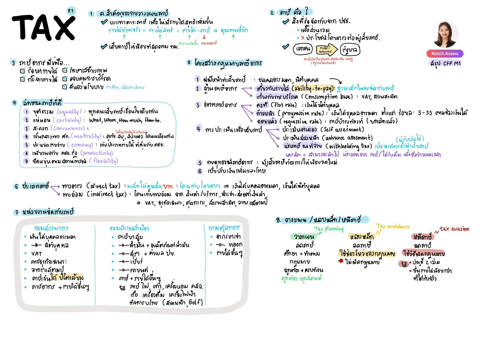
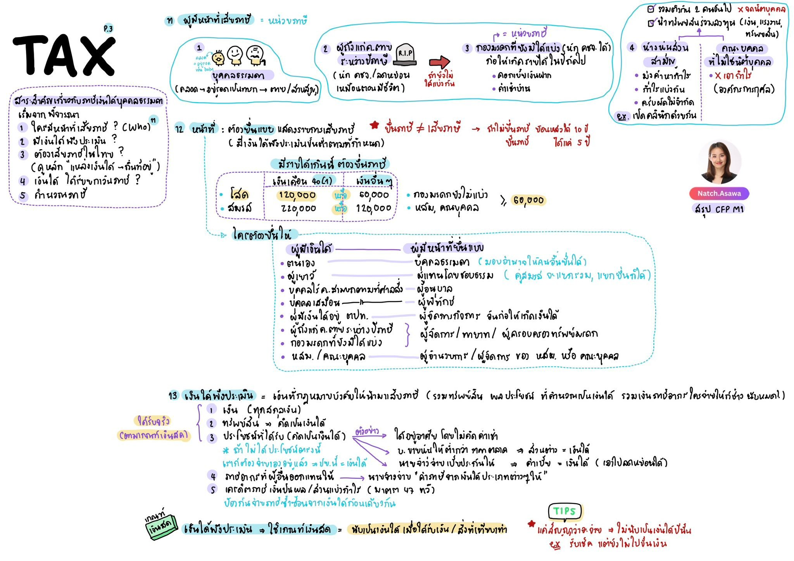
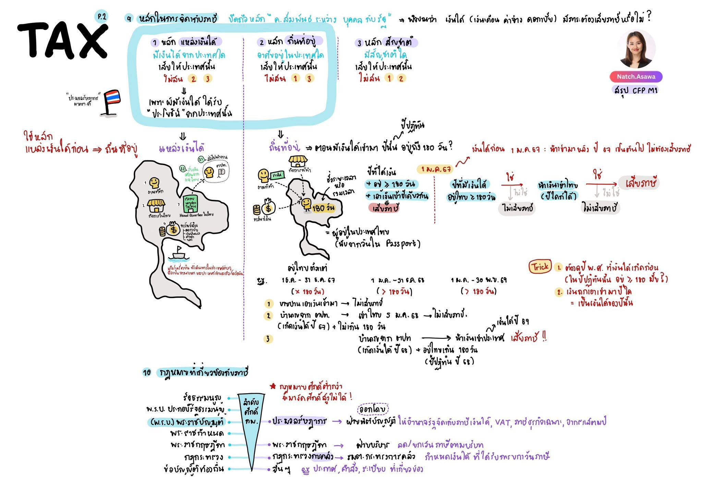
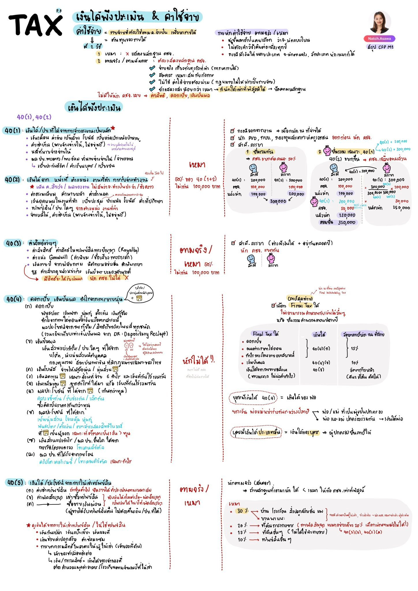
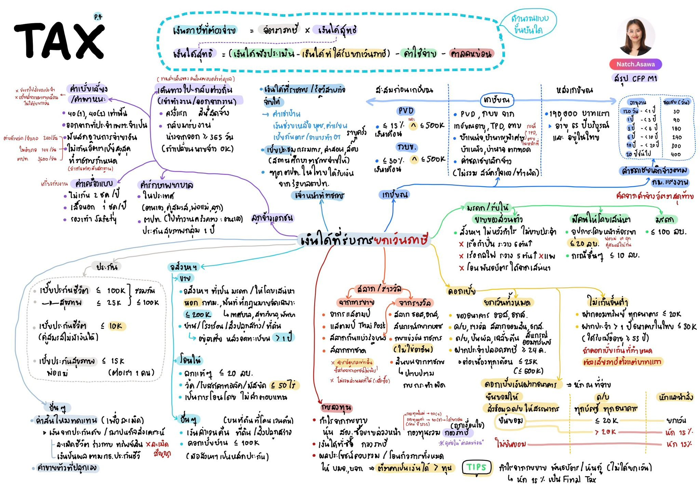
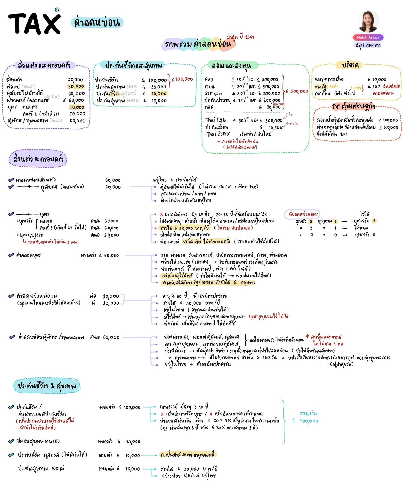
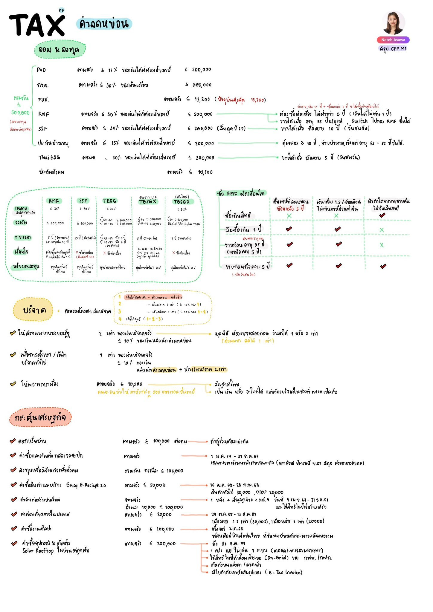
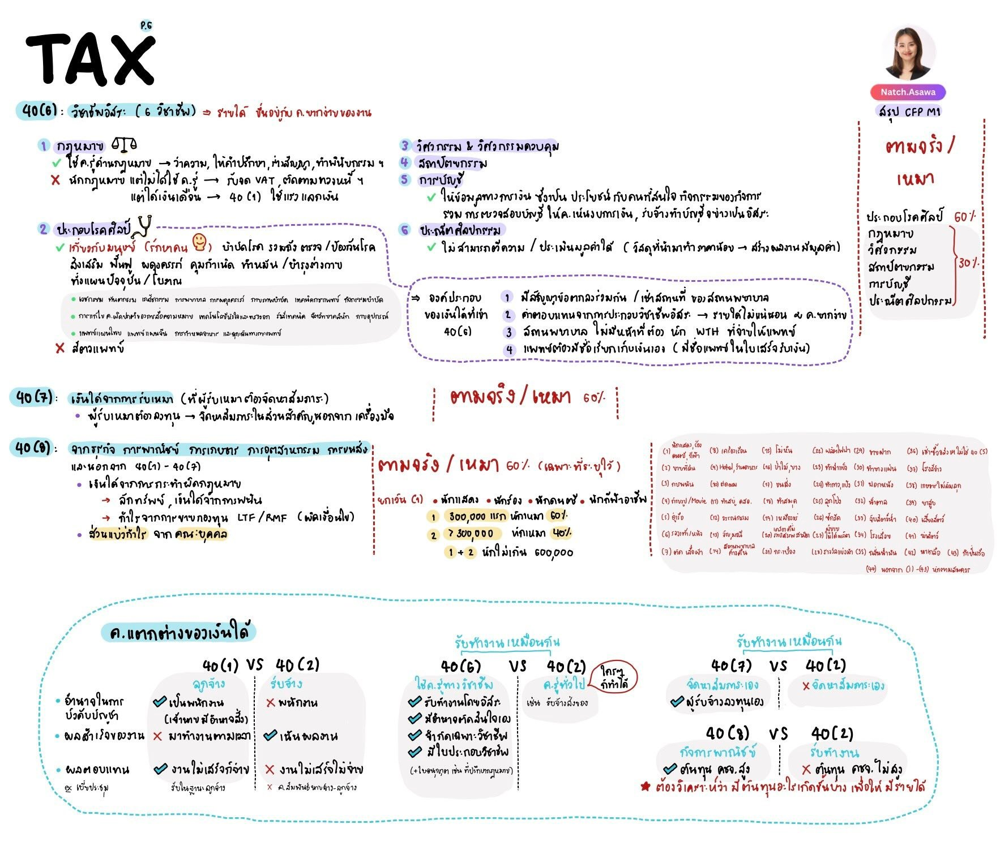
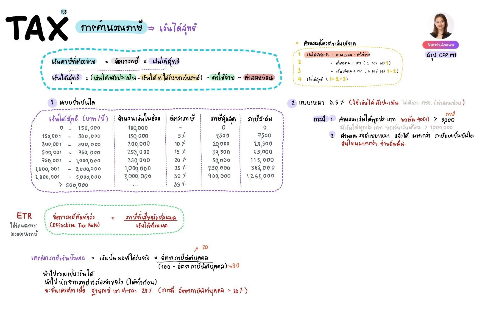
มูลค่าเงินตามเวลา (TVM)
💡 T6-00: แนวคิดพื้นฐาน TVM
ทำไมเงินในวันนี้มีค่ามากกว่าเงินในอนาคต?
เหตุผล 3 ประการที่ดอกเบี้ยมีอยู่:
| เหตุผล | คำอธิบาย |
|---|---|
| 🔥 เงินเฟ้อ (Inflation) | ราคาสินค้าสูงขึ้นตามเวลา → เงินจำนวนเดิมซื้อของได้น้อยลง |
| 💰 ต้นทุนโอกาส (Opportunity Cost) | สละการบริโภคปัจจุบัน → ต้องได้รับค่าตอบแทน |
| ⚠️ ความเสี่ยง (Risk) | อนาคตไม่แน่นอน → ต้องการ Premium สำหรับความไม่แน่นอน |
TVM เป็นเครื่องมือเชื่อมโยง 3 สิ่ง:
- เป้าหมายทางการเงินในอนาคต (FV)
- เงินลงทุนเริ่มต้นจำนวนหนึ่งในปัจจุบัน (PV)
- เงินลงทุนเพิ่มเติมทุกๆ งวดเวลา (PMT)
ดอกเบี้ยอย่างง่าย vs ดอกเบี้ยทบต้น
| Simple Interest | Compound Interest | |
|---|---|---|
| เงินต้น | คงที่ตลอด | เพิ่มขึ้นทุกงวด |
| ดอกเบี้ยคิดบน | เงินต้นเดิมเสมอ | เงินต้น + ดอกเบี้ยสะสม |
| 10,000 บาท 5% ปีที่ 1 | 500 บาท | 500 บาท |
| 10,000 บาท 5% ปีที่ 2 | 500 บาท | 525 บาท (คิดบน 10,500) |
| รวม 2 ปี | 1,000 บาท | 1,025 บาท ⭐ |
แกนเวลา (Time Line) — อ่านทิศทาง Cash Flow
│ │ │ │ │
0 1 2 3 4 (ณ สิ้นงวด)
- ตัวเลขติดลบ = จ่ายเงินออก (Cash Outflow)
- ตัวเลขบวก = รับเงินเข้า (Cash Inflow)
- 0 = ปัจจุบัน (Present)
📐 T6-00B: สูตรสมบูรณ์ FV/PV Lump Sum + Multiple Cash Flows
มูลค่าอนาคต — เงินจำนวนเดียว (FV of Lump Sum)
| กรณี | สูตร |
|---|---|
| อัตราดอกเบี้ยเท่ากันทุกงวด | FVₙ = PV × (1 + i)ⁿ |
| อัตราดอกเบี้ยต่างกันแต่ละงวด | FVₙ = PV × (1+i₁)(1+i₂)...(1+iₙ) |
| ทบต้น m ครั้ง/ปี | FVₙ = PV × (1 + i/m)^(nm) |
ตัวอย่าง: ฝาก 10,000 บาท 4%/ปี ทบต้นทุก 6 เดือน 2 ปี (m=2, n=4) → FV = 10,000 × (1.02)⁴ = 10,824.32 บาท
มูลค่าปัจจุบัน — เงินจำนวนเดียว (PV of Lump Sum)
| กรณี | สูตร |
|---|---|
| อัตราดอกเบี้ยเท่ากันทุกงวด | PV = FVₙ / (1 + i)ⁿ |
| อัตราดอกเบี้ยต่างกันแต่ละงวด | PV = FVₙ / [(1+i₁)(1+i₂)...(1+iₙ)] |
| ทบต้น m ครั้ง/ปี | PV = FVₙ / (1 + i/m)^(nm) |
ตัวอย่าง: ต้องการเงิน 100,000 บาท ใน 3 ปี อัตรา 8% ต่อปี → PV = 100,000 / (1.08)³ = 79,383.22 บาท
กระแสเงินสดหลายจำนวนไม่เท่ากัน (Multiple / Unequal Cash Flows)
คำนวณแต่ละกระแสเงินสดแยกกัน แล้วนำมารวมกัน
| หา FV ณ ปีที่ 3 (ดอกเบี้ย 4%) | หา PV (ดอกเบี้ย 4%) |
|---|---|
| ฝาก 10,000 วันนี้: 10,000 × (1.04)³ = 11,248.64 | รับ 20,000 ปีที่ 1: 20,000 / (1.04)¹ = 19,230.77 |
| ฝาก 20,000 ปีที่ 1: 20,000 × (1.04)² = 21,632.00 | รับ 30,000 ปีที่ 2: 30,000 / (1.04)² = 27,736.69 |
| ฝาก 30,000 ปีที่ 2: 30,000 × (1.04)¹ = 31,200.00 | |
| รวม FV = 64,080.64 บาท | รวม PV = 46,967.46 บาท |
⭐ T6-00C: สูตรสรุปทั้งหมด + จุดสำคัญออกสอบ
สูตรสรุปทั้งหมด 11 สูตร ⭐⭐⭐
| สถานการณ์ | สูตร |
|---|---|
| FV (lump sum, i เท่ากัน) | PV × (1+i)ⁿ |
| FV (lump sum, i ต่างกัน) | PV × (1+i₁)(1+i₂)...(1+iₙ) |
| FV (ทบต้น m ครั้ง/ปี) | PV × (1+i/m)^(nm) |
| PV (lump sum) | FVₙ / (1+i)ⁿ |
| FVA (Ordinary Annuity) | PMT × [(1+i)ⁿ−1] / i |
| PVA (Ordinary Annuity) | PMT × [1 − 1/(1+i)ⁿ] / i |
| FVAD (Annuity Due) | FVA × (1+i) |
| PVAD (Annuity Due) | PVA × (1+i) |
| Perpetuity | PMT / i |
| EIR | (1 + i/m)^m − 1 |
| Rule of 72 | T = 72 / r |
จุดสำคัญที่มักออกสอบ T6 ⭐
- Annuity Due > Ordinary Annuity เสมอ → คูณด้วย (1+i) เพิ่ม เพราะแต่ละงวดทบต้นได้นาน 1 งวดกว่า
- EIR สูงกว่า Nominal Rate เสมอ เมื่อทบต้นมากกว่าปีละครั้ง
- Rule of 72 — ใช้ประมาณเท่านั้น ไม่แม่นยำ 100% (เช่น 6% → 72/6 = 12 ปี)
- Perpetuity — เมื่อ n → ∞, PV = PMT/i (ง่ายมาก เช่น หุ้นบุริมสิทธิ์)
- Add-on Rate — ดอกเบี้ยที่แท้จริง ≈ Add-on × 2 (ประมาณ)
- ทบต้นถี่กว่า → FV สูงกว่า (ทบต้นทุกวัน > ทุกเดือน > ทุกปี)
- คำนวณทุนเพื่อเกษียณ: PV = ค่าใช้จ่ายต่อปี × PVIFAᵢ,ₙ (ใช้ PVA formula)
📊 T6-01: TVM พื้นฐาน — Compound Interest & เครื่องคิดเลข
หลักการดอกเบี้ยทบต้น
- ในการลงทุนส่วนใหญ่ → อัตราดอกเบี้ยคิดแบบทบต้น เสมอ
- Stated/Nominal rate (i) = อัตราที่ระบุในสัญญา ยังไม่ได้พิจารณาความถี่
- Effective Interest Rate (EIR / iEFF) = อัตราดอกเบี้ยที่แท้จริง
m = จำนวนครั้งที่คิดดอกเบี้ยต่อปี · Ex: ทบทุก 6 เดือน → m = 2 ครั้ง/ปี
Set เครื่องคิดเลข BA II Plus (ต้องทำก่อนใช้)
| ขั้นตอน | วิธีกด | หมายเหตุ |
|---|---|---|
| 1. ตั้งทศนิยม 9 ตำแหน่ง | 2nd → .(FORMAT) → กด ↑↓ จน DEC → ใส่ 9 → ENTER | เช็ค: 1+0.1 = 1.1 |
| 2. ตั้งโหมด AOS | 2nd → .(FORMAT) → ↑↓ จน Chn → 2nd → ENTER(SET) → ได้ AOS | เช็ค: 1+2×3 = 7 (AOS) |
| 3. ตั้ง BGN/END | 2nd → PMT(BGN) → 2nd → ENTER(SET) → มี BGN แสดงบนหน้าจอ | ★★ สำคัญมาก |
| 4. EFF/NOM | 2nd → 2(ICONV) → เลือก NOM/EFF → ENTER → C/Y = ความถี่ → CPT | หา EFF จาก NOM |
| 5. Storage/Recall | พิมพ์เลข → STO → เลือกตำแหน่ง 1–9 · RCL → ดึงเลขที่เก็บ | เลขที่เก็บใน 1–9 |
Rule of 72
📅 T6-02: Annuity & 2-Phase & Perpetuity
เงินรวด (Annuity) 2 ประเภท
| ประเภท | ลักษณะ | ตัวอย่าง |
|---|---|---|
| Ordinary Annuity (END) | รับ/จ่ายเงิน ณ สิ้นงวด (END) | ผ่อนบ้าน ค่างวดรถ |
| Annuity Due (BGN) | รับ/จ่ายเงิน ณ ต้นงวด (BGN) | เบี้ยประกัน กองทุนการศึกษาบุตร |
วิธีแก้โจทย์ 2-Phase (สำคัญมาก)
| Phase | โหมด | หน้าที่ |
|---|---|---|
| Phase 1 (สะสม/เก็บก่อนเกษียณ) | END | มีเงินฝากอยู่ก่อน PV · คิดเงิน → ใช้ PMT (ทุกสิ้นงวด) · เมื่อครบหา FV |
| Phase 2 (แจกจ่าย/ถอนใช้) | BGN | เงินนั้นทำให้ PMT (ทุกต้นงวด) · ถ้าไม่มีเงินจนไปสู่ 0 → ไปหลัง "มรดก" |
- FV Phase1 = PV Phase2 (เงินต่อเนื่อง ข้ามจาก Phase 1 ไป Phase 2)
- เงินนำตั้มทุนก่อน PV · คิดเงิน → ใช้ PMT
- ถ้าไม่มีเงินจนไปสู่ 0 → ส่วนหลัง หมด → ไปหลัง "มรดก"
Perpetuity (เงินรวดไม่จำกัด)
ตัวอย่าง: ถ้า PMT = 1,000, I = 5% → PV = 1,000 / 0.05 = 20,000
X-Ray ดู AMORT (ดูการตัดชำระหนี้)
2nd → PV(AMORT) → กด P1 = งวดแรก, P2 = งวดสุดท้าย → ENTER, ENTER
กด ↓ = BAL (ยอดคงเหลือ) · PRN (เงินต้นงวด P1 ถึง P2) · INT (ดอกเบี้ยงวด P1 ถึง P2)
🧮 T6-03: โจทย์ Annuity/PMT ชุดที่ 3/4
โจทย์ (1): ลงทุนในหุ้นบริษัทหนึ่ง ซึ่งจ่ายเงินต้นทุกสิ้นปี 7,000 บาท ระยะ 5 ปี อัตรา 8% → PV = ?
PV = −27,982.37 บาท (มูลค่าหุ้นที่ยุติธรรม = 27,982.37 บาท)
โจทย์ (2): เลือก 5M ก้อน หรือ บำนาญ 300,000 ทุกต้นปี 20 ปี อัตรา 5%
PV = −3,921,296 ≈ 3.9 ล้าน < 5 ล้าน → เลือก 5 ล้าน
เทียบ: ลดดอกเบี้ย 1%=5%→4%: 5M → 4.6M, 3%: 4.4M, 2%: 4.1M, 1%: 3.9M (✅)
โจทย์ (3): ฝากเงิน 10,000 ทุกสิ้นปี 5 ปี อัตรา 4% → FV = ?
ขั้นตอน 1: เช็คว่า FV > 10,000×5=50,000 ✅
FV = 54,163.22 บาท
โจทย์ (4): ฝากเงิน 10,000 ทุกต้นปี 5 ปี อัตรา 4% → FV = ?
FV = 56,329.75 บาท (BGN > END เพราะเงินเข้าเร็วกว่า)
🧮 T6-04: โจทย์ Q3.5, Q3.6, Q3.7
Q3.5: คุณต้องการเรียนต่อปริญญาโท อีก 5 ปีข้างหน้า ซึ่งค่าใช้จ่าย 250,000 บาท ระยะเวลาเรียน 2 ปี อัตราผลตอบแทน 4% ต่อปี → ต้องมีเงินต้นเท่าไร ณ วันนี้
PV Phase2 = −490,384.6 บาท
Phase 3 (ย้อนกลับ): FV = 490,384.6 · I/Y=4% · N=5
PV₀ = 490,384.6 / (1.04)^5 = −403,060.40 บาท ✅
Q3.6: พันธบัตรมูลค่าที่ตราไว้ 1,000 บาท อัตราดอกเบี้ย (คูปอง) 8% ต่อปี จ่ายปีละสองครั้ง และมีอายุคงเหลือ 5 ปี หากนักลงทุนต้องการผลตอบแทน 10% ต่อปี → มูลค่าปัจจุบัน = ?
I/Y = 10%/2 = 5% ต่อ 6 เดือน
PMT = 8%/2 × 1,000 = 40 บาท
FV = 1,000
[END] → PV = −922.79 บาท
Q3.7: คุณต้องการกู้บ้าน ค่างวด 40,000 บาท ≤ 40% ของเงินเดือน · เงินเดือน 100,000 · กู้ 20 ปี อัตรา 8% → ราคาบ้านสูงสุด = ?
ราคาบ้าน = เงินดาวน์ + เงินกู้
เงินกู้สูงสุด: ผ่อน 20 ปี = 20 × 12 = 240 เดือน [END]
N=240 · I/Y=8%/12 · PMT=−16,000 · FV=0
PV = −1,912,868.67 บาท
ราคาบ้าน = 400,000 + 1,912,868.67 = 2,312,868.67 → ≤ 2.3 ล้านบาท
🧮 T6-05: โจทย์ 2-Phase Q3.1 และ Q3.2
Q3.1: ERP 2-Phase (เกษียณ)
Phase 1 (สะสม): [END] ฝาก PMT ทุกสิ้นปี → FV
Phase 2 (ถอนใช้): [BGN] ถอน PMT ทุกต้นปี จาก FV → 0
N Phase2 = 100,000 / 5 = 20, I/Y = 31.7% → ตามโจทย์
FV₁ = PV₂ = 100,000
คำนวณ: PV = 0 · PMT = ? → หา PMT Phase1
ผล: PMT = −71,133.33 บาท/ปี (END)
Q3.2: Simple Method 2-Phase
Phase 2 (แจกจ่าย) = BGN
ผล Phase 1: FV = PMT × [(1+i)^N −1] / i
แบบ Simple: FV = 300,000 · N = ? · I/Y = 31.7% → PMT = ?
Phase 2: (PMT+) × (300,000, 000 × 1.317)/300,000
ผล = PMT Phase 2 = (PMT+) = −6,543.19 บาท/ปี
🧮 T6-06: Q3.3 กู้รถ & Q3.4 กองทุนการศึกษา
Q3.3: คุณณัฐชา และคุณณภัทร ชมู ต้องการซื้อรถยนต์ราคา 1,300,000 บาท ซึ่งคิดอัตราดอกเบี้ยแบบ Add-on Method 4% ต่อปี โดยผ่อนชำระเป็นเวลา 4 ปี จงหาค่างวดรายเดือน
1/Y = 4.971% ต่อปี · PMT = ? → PMT = 62,465.81 บาท/ปี
Phase 2 (Add-on): เงินต้น = 1,105,000 · ดอกเบี้ย = 1,105,000 × 5% × 4 = 221,000
ยอดผ่อน = 1,105,000 + 221,000 = 1,326,000
ค่างวด = 1,326,000 / 48 = 27,625 บาท/เดือน ✅
Q3.4: กองทุนการศึกษา 4-Phase
Phase 1 (ปี 49→61): BGN ออม 12,000 บาท/ปี ตั้งแต่ 49–61 (ทุกปี BGN)
Phase 2 (ปี 61→66): คำนวณค่าเรียน M: 12,000 (BGN) → คำนวณ FV ไป 66
Phase 3 (เข้าม.1 จนถึงเกษียณ): [BGN] FV = PMT อยู่ปี 61
Phase 4: เข้าเกษียณ N=7 · I/Y=4.71% × 0.85 · PV=0
PMT = −7,194.91 บาท/ปี ✅
🧮 T6-07: Simple Interest Method & X-Ray AMORT
Simple Interest กู้บ้าน
PMT = [N=360 · I/Y=6%/12=0.5% · PV=1,000,000 · FV=0]
PMT = 5,995.51 → ≈ 5,333.33 บาท/เดือน (Simple)
X-Ray AMORT (ดูตัดชำระ)
2nd → PV(AMORT) → กด P1 = 1, P2 = 12 → ENTER, ENTER
↓ = BAL (ยอดคงค้าง) · PRN (ตัดเงินต้นงวด 1–12) · INT (ดอกเบี้ยงวด 1–12)
ตัวอย่าง: ดูงวดที่ 1: INT ≈ เกือบทั้งหมด · PRN น้อย → ต้นทางค่อยๆ ลด
🏦 T6-08: เงินฝากออมทรัพย์ ฝากประจำ และแบบบันได
หลักการ: คิดดอกเบี้ยรายวัน (Daily Interest Rate = 1/365 วัน)
เงินฝากออมทรัพย์ (4 วิธีคำนวณดอกเบี้ย)
| วิธี | ลักษณะ |
|---|---|
| Minimum Account Balance | คำนวณจากยอดต่ำสุดในแต่ละเดือน · ได้น้อยที่สุด · (รวมที่: 6 เดือน) |
| FIFO (First-in First-out) | ถอนเงินที่ฝากก่อน Ex: ฝากประจำ 12 เดือน → ฝากก่อน ทยอยฝาก · ดอกเบี้ยน้อยกว่า เส้นที่ 3 |
| LIFO (Last-in First-out) | ถอนใหม่ก่อน → เสียดอกเบี้ย สูงกว่า FIFO |
| Daily Interest (★ ใช้จริง) | คำนวณดอกเบี้ย วันต่อวัน → จากยอดคงเหลือแต่ละวัน · ใช้ในหน้าจอในปัจจุบัน |
ตัวอย่าง: ฝาก 10,000 บาท ณ 1 ม.ค. ดอกเบี้ย 2% ต่อปี ถอน 30 มิ.ย.
= 10,000 × 2 × 180 / 365 × (1/100) = 10,098.63 บาท
เงินฝากประจำ (Daily Interest)
ไม่เข้าฐาน ใน FV ในรอบเดือน ถ้าถอนก่อนกำหนด → เสียค่าปรับ
ตัวอย่าง: ฝากประจำ 3 เดือน คิดดอกเบี้ย 2.55% ต่อปี (After Tax = 3% × 0.85 = 2.55%)
ดอกเบี้ย = 10,000 × 2.55%/365 × 90 = 10,062.87 บาท
เงินฝากแบบบันได (Step-up)
คิดเต็มเดือน ใช้ 1 ปี = 365 วัน
ระหว่างเดือน ไม่มีดอกเบี้ยทบต้น
iEFF = คิดค่าดอกเบี้ยสะสมต่อปี (อิงจากสูตรประมาณ)
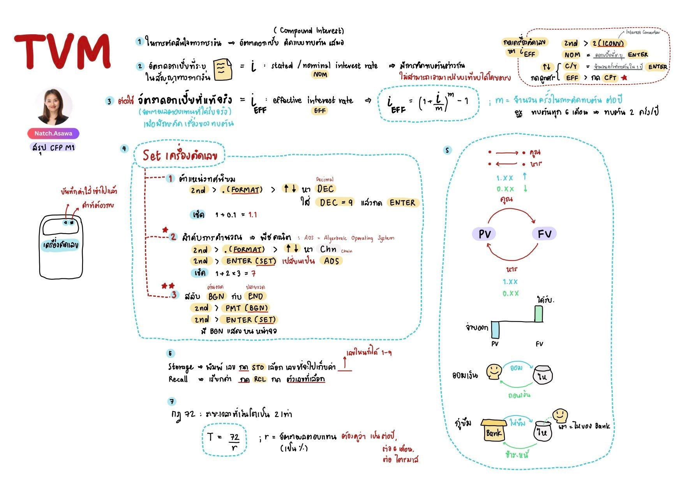
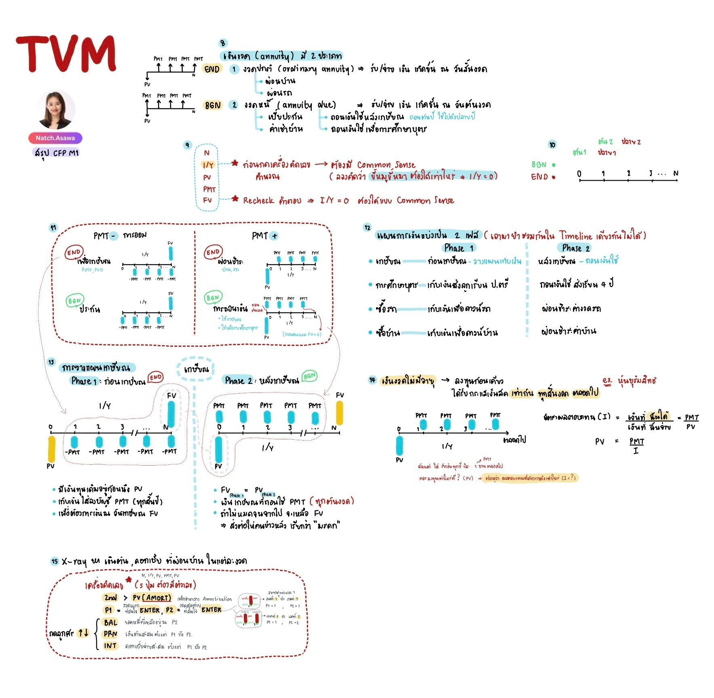
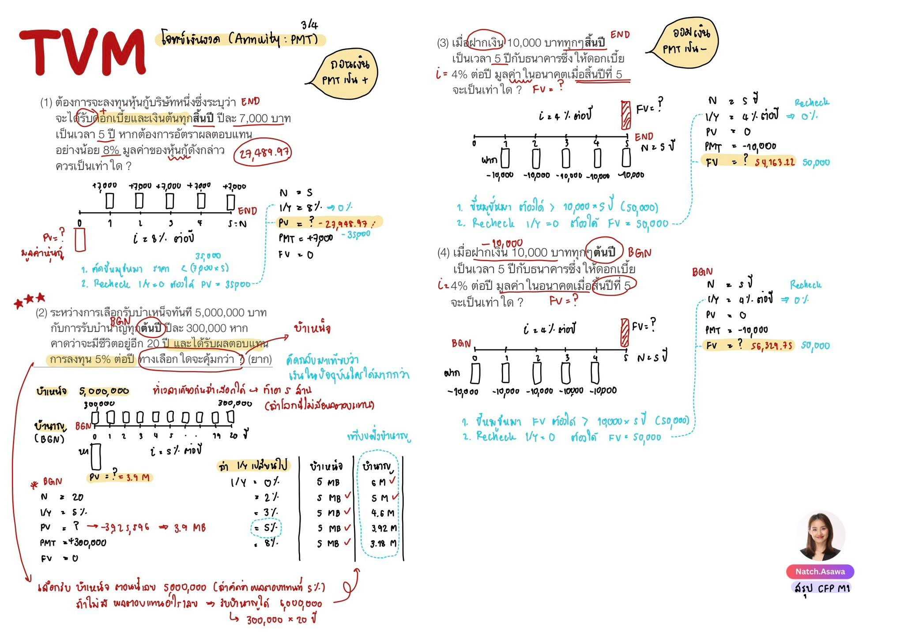
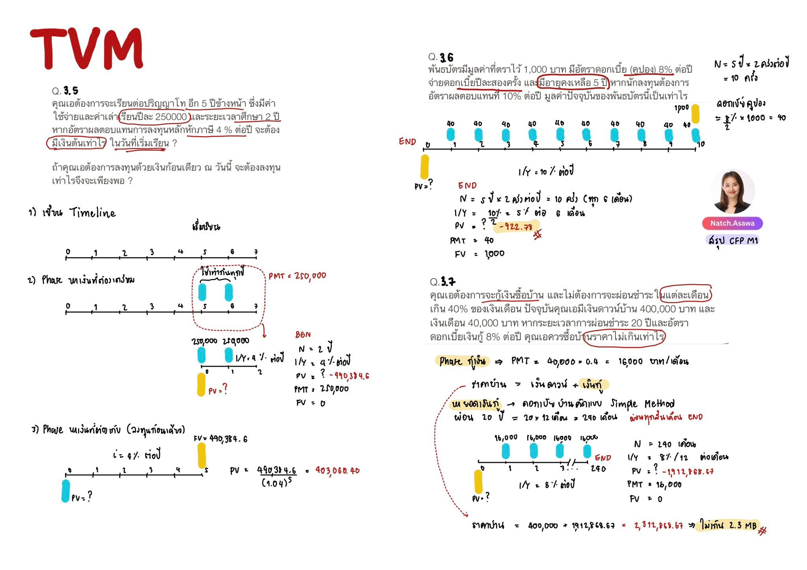
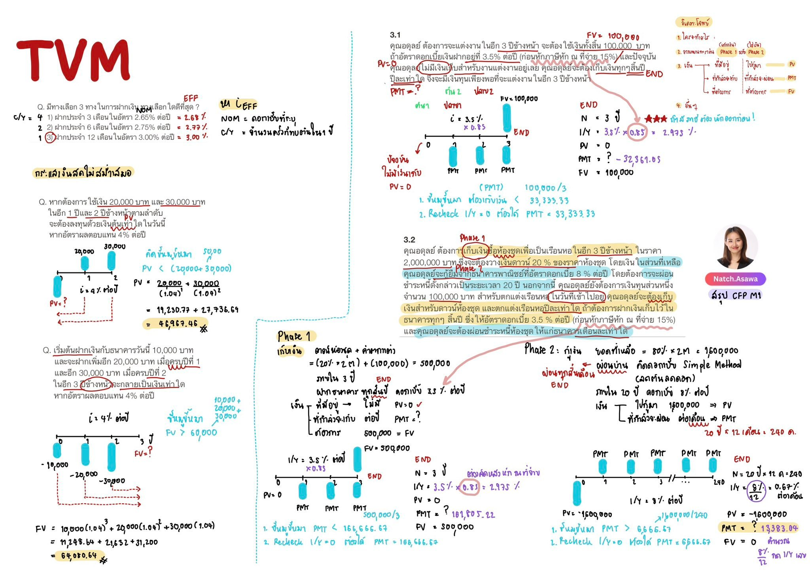
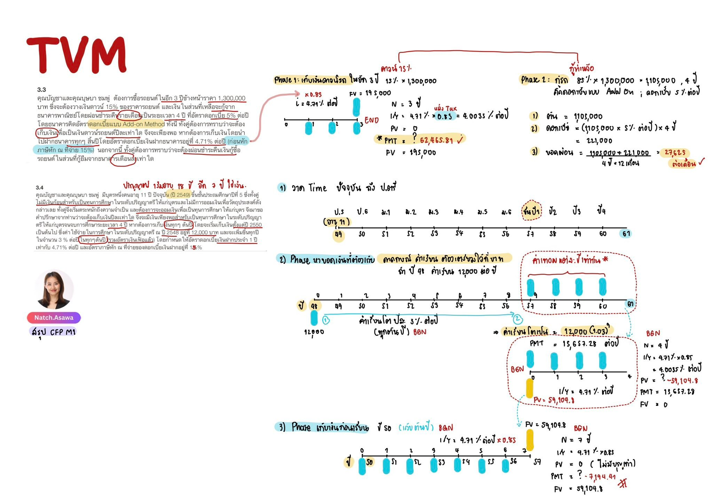
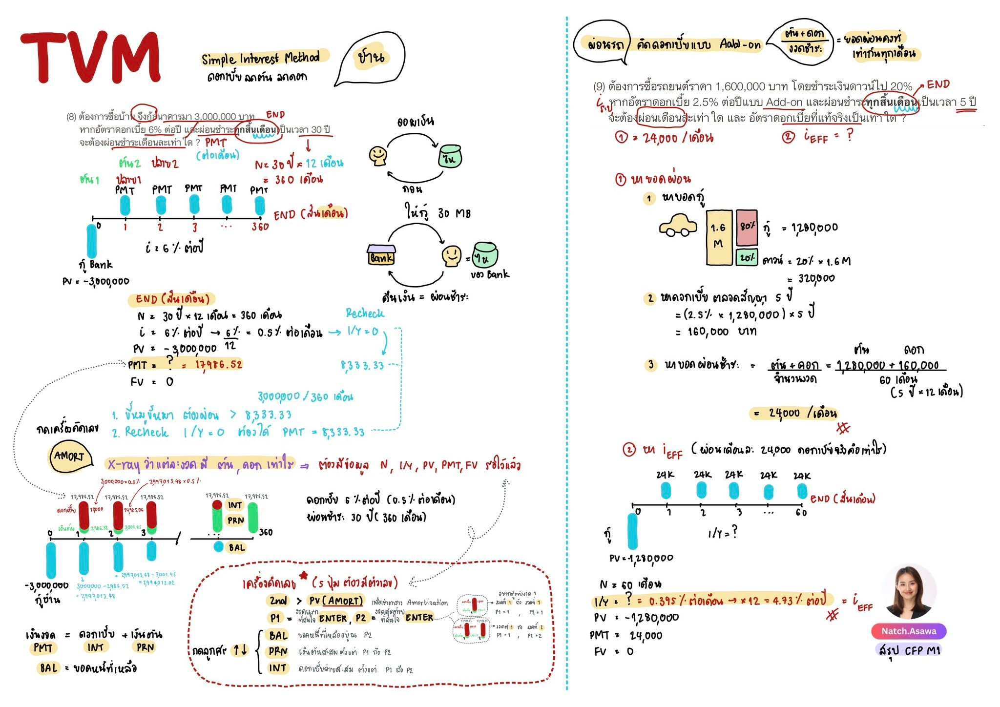
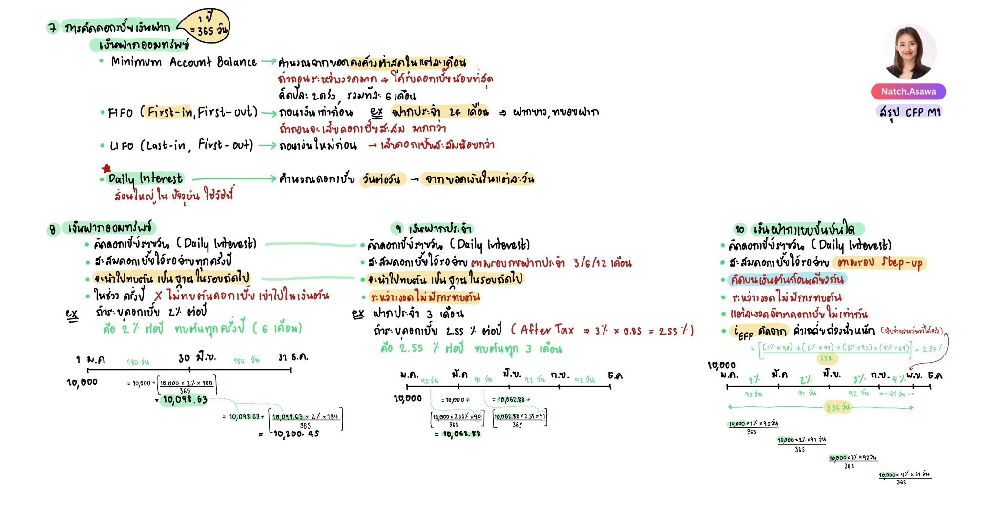
การบริหารสภาพคล่อง
💵 CF-01: การบริหารสภาพคล่อง — ภาพรวม
1. วัตถุประสงค์ในการถือเงินสด (3 อย่าง)
| วัตถุประสงค์ | รายละเอียด | ตัวอย่าง |
|---|---|---|
| Convenience Motive (Pocket Money) | เพื่อใช้จ่ายทั่วไปในชีวิตประจำวัน | ค่าอาหาร ค่าเดินทาง 1–2 สัปดาห์ |
| Contingency Motive (Emergency) | เพื่อฉุกเฉิน ไม่มากเกิน ค่าเสียโอกาส | ป่วย ตกงาน รถเสีย 3–6 เดือน |
| Store of Value | ซื้อสินค้ามูลค่าสูง เช่น ตู้เย็น เครื่องใช้ไฟฟ้า | ประกันคุ้มครอง ปกส.ดำ |
2. ค่าเสียงจากการถือเงินสดมากเกินไป
- Spending Risk: มีเงิน ใช้จ่าย เก็บเงิน ไม่ออม
- Inflation Risk: เงินสดคงค่า อำนาจซื้อลดลง
3. ตัวเลือกในการบริหารสภาพคล่อง
- ♥ = Crowdsf: ไม่ต้องง่าย ต้องทดลอง ถ้าดี · ทำเหลือพคล่อง ดัน นิ่ง ที่แหล่งอ่างถุงเงินสด
- เปลี่ยนสภาพคล่อง ดัน นิ่ง ที่แหล่งอ่างเงินสด
- เส่นที่ ผลตอบแทนสำหรับดัน
- โดย เปลี่ยนเงินเหลือสด ได้ เงยมุก ที่ เปลี่ยนแปลงมากกว่า
4. Cost of Credit (สรุปตาราง)
| วิธี | Simple Interest Method | Discount Method | Add-on (Flat Rate) |
|---|---|---|---|
| ดอกเบี้ยจ่าย | ตามเงินต้นคงค้าง | หักล่วงหน้า ณ ต้น | คิดจากเงินต้นเดิมทั้งหมด |
| เงินที่รับ | เท่ากับวงเงิน | น้อยกว่าวงเงิน | เท่ากับวงเงิน |
| True Rate | = Stated Rate | > Stated Rate | ≈ 2× Stated Rate |
| ตัวอย่าง | กู้ 100K @ 10% = ดอกเบี้ย 10K | รับ 85K ดอก 15K True=17.65% | ผ่อน Add-on 2.5%×5ปี = ค่างวด 12K |
🏦 CF-02: เงินฝาก & สถาบันการเงิน
เช่า vs ซื้อ (3C)
| ปัจจัย | เช่า | ซื้อ |
|---|---|---|
| Cost | ต่ำตอนแรก แต่ไม่ได้เป็นเจ้าของ | สูงตอนแรก แต่ได้ทรัพย์สิน |
| Control | ยืดหยุ่น ย้ายได้ | ควบคุมได้ ดัดแปลงได้ |
| Credit | ไม่สร้าง Credit ระยะยาว | สร้างประวัติสินเชื่อ |
ปัจจัยเลือกสถาบันการเงิน (3 Factor)
| ปัจจัย | รายละเอียด |
|---|---|
| Fee | ค่าธรรมเนียม Min Balance, ค่าธุรกรรม |
| Convenience | สาขา ATM · ตำแหน่ง · บริการออนไลน์ |
| Compatibility | ตรงกับความต้องการ · บริการ · ความน่าเชื่อถือ |
ประเภทสถาบันการเงิน
| ประเภท | ตัวอย่าง |
|---|---|
| 1. ธนาคารพาณิชย์ (Commercial Bank) | กสิกร กรุงเทพ SCB ไทยพาณิชย์ |
| 2. สถาบันการเงินที่ไม่ใช่ธนาคาร (Non-bank) | บริษัทเงินทุน (Finance Company) · บริษัทประกัน · บลจ. · กองทุน |
| 3. สถาบันการเงินเฉพาะกิจ (Specialized) | ออมสิน ธอส. ธ.ก.ส. SME Bank |
| 4. สหกรณ์ออมทรัพย์ (Personal Loan) | สหกรณ์ครู สหกรณ์ตำรวจ |
After-tax Return สูตร
ตัวอย่าง: ฝากประจำ 3% · ภาษี 15% → After-tax = 3% × (1−0.15) = 2.55%
📊 CF-03: Liquid Assets เปรียบเทียบ
ตารางสินทรัพย์สภาพคล่อง (Liquid Assets)
| เครื่องมือ | สภาพคล่อง | ผลตอบแทน | ค่าเสีย | ภาษี |
|---|---|---|---|---|
| เงินสด / กระเป๋า (Pocket Money) | T+0 (มีเลย) | ไม่มี | ต่ำ | — |
| บัญชีออมทรัพย์ (มีตู้ ATM) | T+0 (มีเลย) | ต่ำ (1–2%) | ต่ำมาก | 15% |
| กองทุนตลาดเงิน (Money Market) | T+0 (มีเลย) | ปานกลาง (+) | ต่ำ | 15% |
| เงินฝากประจำ (CD) | T+1 (ถอนล่วงหน้า) | สูงกว่าออมทรัพย์ (++) | เสียค่าปรับถ้าถอนก่อน | 15% |
| Treasury Bills (T-Bills) | ต้องรอขาย (ค่อนข้างสูง) | สม่ำเสมอ (+) | ต่ำ | ยกเว้น |
| พันธบัตร / หุ้นกู้ | ขาย → T+2 ขึ้นไป | สูง (++) | Market risk | 15% |
อัตราผลตอบแทนหลังภาษี
| เครื่องมือ | Before Tax | After Tax (ภาษี 15%) |
|---|---|---|
| ออมทรัพย์ 2% | 2% | 2% × 0.85 = 1.7% |
| ฝากประจำ 3% | 3% | 3% × 0.85 = 2.55% |
| พันธบัตร 4% | 4% | 4% × 0.85 = 3.4% |
⭐ 2 แบบ: 1. เส้นที่ผลตอบแทน → ดอกเบี้ย ไม่ได้รับ / ไม่ได้หักล่วงหน้า / ไม่ negotiable
พันธบัตรรัฐบาล → ขายได้ในตลาดรอง, T-Bills = ซื้อต่ำกว่าหน้า ได้ส่วนต่างเมื่อครบกำหนด
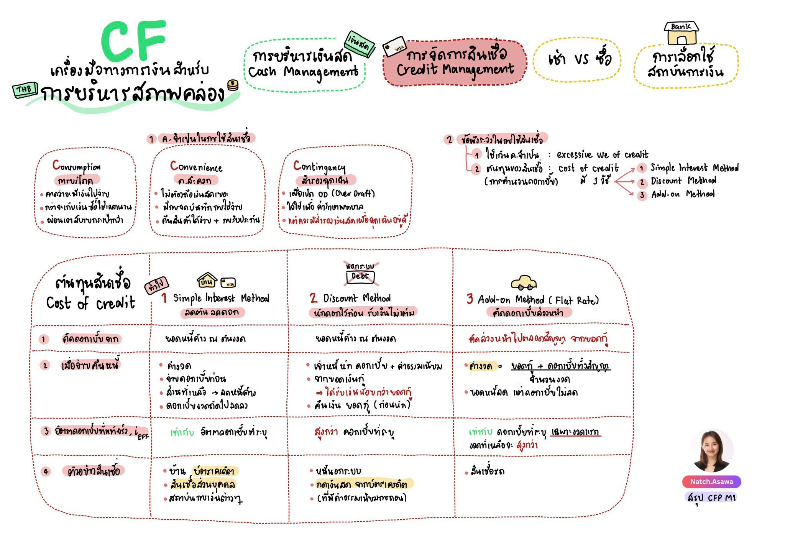
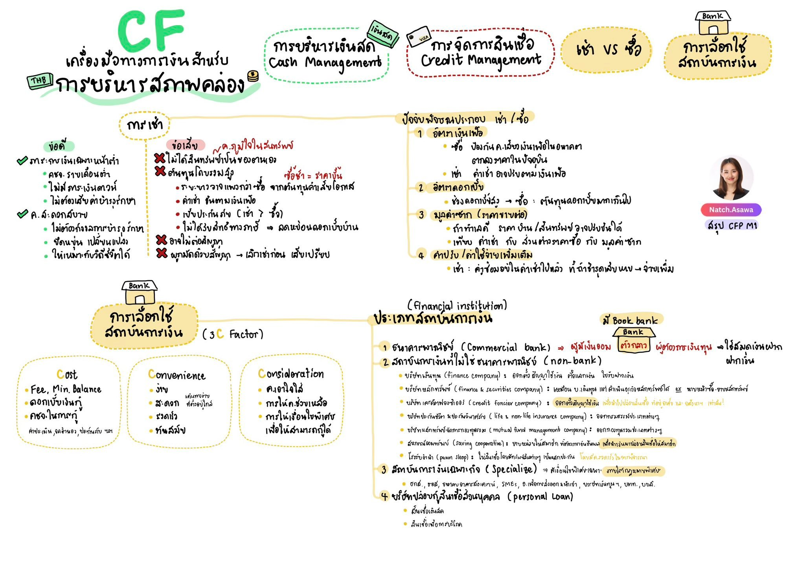
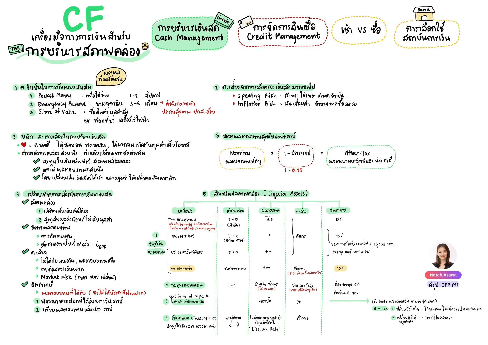